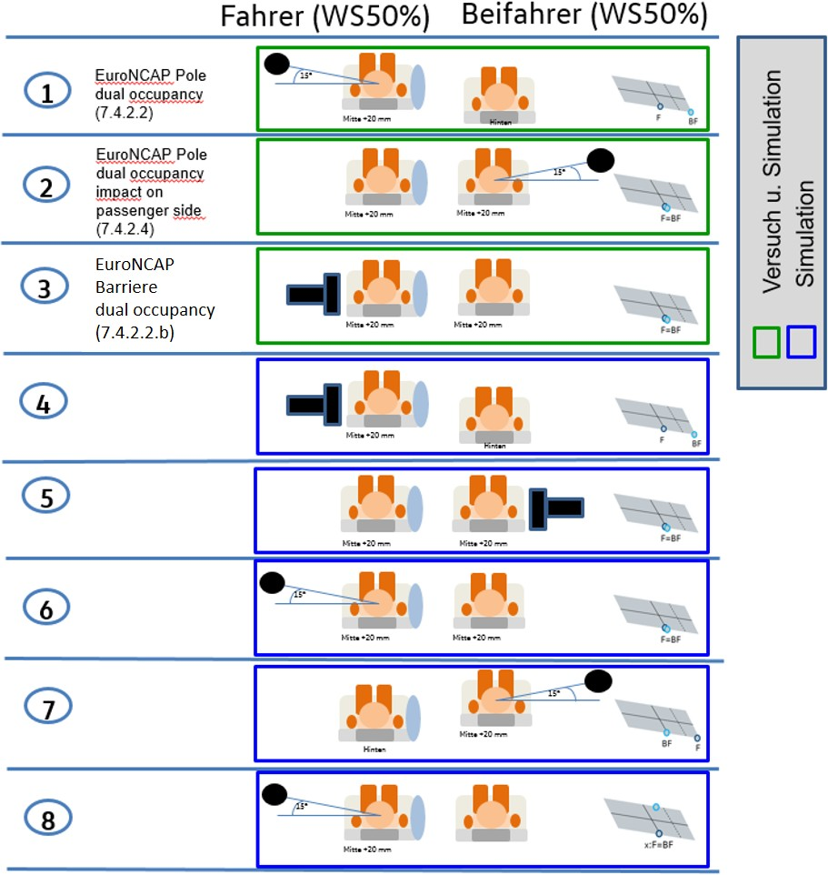
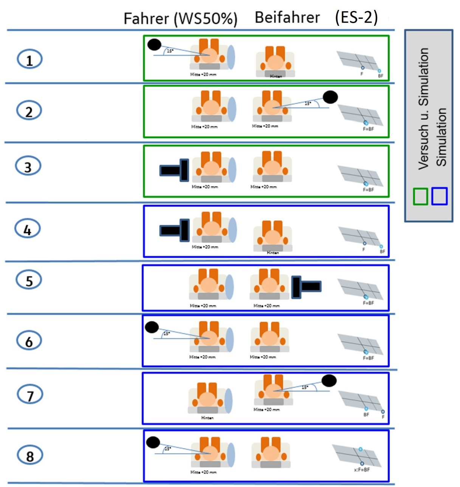
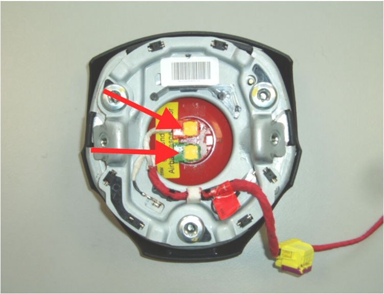
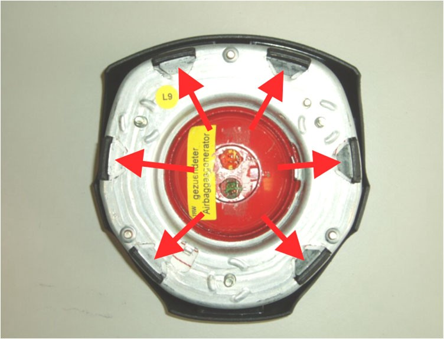
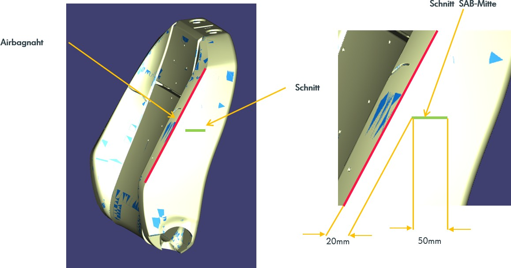

Konzernlastenhaft
Centerairbag
[redacted]: LAH [redacted-phone]A
Autor [redacted-person], Daniel
Abt./OE EKSR / 1565
V36.01_BT-LAH_Final_Basismodul-TE-V36_Nov. 2022
Mobil +49 152 [redacted-phone]
Telefax -
E-Mail [redacted-email]
Erstausgabe [redacted-phone]
Änderungsstand [redacted-phone]
Verteiler
Über KVS
Abstimmung
[I: BT-LAH[redacted-ext]]
Änderungsdokumentation
[I: BT-LAH-941]
|
|
|
|---|---|---|
| [redacted-person] |
|
|
| [redacted-person] |
|
|
| [redacted-person] |
|
|
|
|
|
|
|
|
| [redacted-person] |
|
|
| [redacted-person] |
|
|
| [redacted-person] |
|
|
| [redacted-person] |
|
|
| [redacted-person] |
|
|
| [redacted-person] |
|
|
|
|
|
|
|
|
|
|
|
|
|
|
|
|
|
| [redacted-person] |
|
|
Inhaltsverzeichnis
Vertraulichkeitshinweis. 6
Anforderungen an Erprobung. 47
Definitionen, Begriffe, Abkürzungen 56
Abkürzungen 56
[redacted-person] 60
Querschnittslastenhefte 62
[I: BT-LAH-4]
Das vorliegende Bauteil-Lastenheft (BT-LAH) ist angelehnt an die Struktur des VDA-Komponen- tenlastenheftes Modul 2 (www.vda-qmc.de) und beschreibt komponentenspezifische Anforderun- gen. Das VDA-Modul 1 wird durch die [redacted-co]99000 abgebildet und beschreibt komponentenüber- greifende allgemeine Anforderungen zur Leistungsbringung im Rahmen der Bauteilentwicklung.
[I: BT-LAH-13]
Die vom Auftragnehmer zu erfüllenden Anforderungen sind in der Identifikationsnummer (z. B: [A: BT-LAH-1]) grundsätzlich durch ein "A" gekennzeichnet. Textteile, die durch ein "I" gekennzeichnet sind, sind Informationen zum besseren Verständnis des BT-LAH. Gibt es keine Identifikationsnum- mer oder keine Kennzeichnung mit "A" bzw. "I", so handelt es sich ebenfalls um eine Anforderung.
[A: BT-LAH-5]
Das vorliegende Bauteil-Lastenheft und die Norm [redacted-co]99000 inkl. Teil 1 bis Teil 4 sind zu- sammen Grundlage des zu erbringenden Leistungsumfanges des Auftragnehmers.
[A: BT-LAH-6]
Dieses BT-LAH beschreibt Leistungen, Anforderungen, Prüf- und Erprobungsbedingungen, die das zu entwickelnde Produkt und der Auftragnehmer erfüllen müssen.
Der fahrzeugspezifische Anhang und die jeweiligen Anfragezeichnungen bzw. Anfrageblätter sind Bestandteil des Lastenhefts.
[redacted-person]: vertraulich
[I: BT-LAH[redacted-ext]]
[I: BT-LAH[redacted-ext]]
[redacted-person] vorbehalten. Weitergabe oder Vervielfältigung ohne vorherige schriftliche Zustimmung des Fachbereiches der [redacted-person] verboten. Vertragspartner erhalten dieses Dokument nur über die zuständige Beschaffungsabteilung.
© [redacted-person]
Projektkategorie: 25
[I: BT-LAH[redacted-ext]]
[I: BT-LAH[redacted-ext]]
Informationen ab der Klassifizierung „vertraulich“ stellen Geschäftsgeheimnisse im Sinne des Ge- setzes zum Schutz von Geschäftsgeheimnissen dar.
[A: BT-LAH[redacted-ext]]
[redacted-person] ist verpflichtet, bei Informationen ab der Klassifizierung „vertraulich“ dem Auftrag- geber einen Nachweis des Informationsschutzes gemäß VDA ISA mit einem entsprechenden TISAX- Zertifikat vorzulegen.
[A: BT-LAH[redacted-ext]]
[redacted-person] hat dem Auftraggeber folgende TISAX-Zertifikate vorzulegen/nachzuweisen: info high, proto parts, proto vehicles
[redacted-person] beschreibt die Entwicklung des ZSB Centerairbag auf Modulebene, sowie die In- tegration in ZSB Sitz und Fahrzeugumgebung. Die in diesem Lastenheft und in den [redacted-person] beschriebenen Spezifikationen und Anforderungen sind zu den jeweiligen Freigaben nachzuweisen. [redacted-person] hierzu liegt beim Auftragnehmer.
Bei der Entwicklung des Centerairbags sind sämtliche relevanten Gesetzesanforderungen, Con- sumertest, siehe fahrzeugspezifischen Anhang „Typprüfunterlagen, Vorschriften, Gesetze“, und Anforderungen der Fachabteilung einzuhalten.
Falls der Auftragnehmer ebenfalls für die Entwicklung des ZSB Kopfairbag und/ oder ZSB- Seiten- airbag nominiert ist, ist er verpflichtet die Airbags auf eine optimale biomechanische Belastung des Dummys abzustimmen.
Für [redacted-co] gilt: Sitzintegration werden nicht an den CeAB-Lieferanten mitvergeben.
[redacted-person] ist ein ZSB Centerairbag der bei einer robusten und reproduzierbaren Ent- faltung die geforderten Spezifikationen erfüllt. Die vereinbarten Projekttermine wie z. [redacted-person] Frei- gabe, B- Freigabe, BMG sind durch den Auftragnehmer sicherzustellen.
Bezeichnung des Zielfahrzeuges: Siehe fahrzeugspezifischer [redacted-person]: Siehe fahrzeugspezifischer Anhang
Zielmarkt: [redacted-person] Anhang
[A: BT-LAH-21]
[A: BT-LAH-22]
[A: BT-LAH-25]
[A: BT-LAH-916]
[redacted-person] sind dem [redacted-person] bzw. dem Variantenbaum der Anfrage zu entnehmen. Varianten dürfen nach Absprache mit der Fachabteilung der technischen Entwicklung zusammengefasst werden. [redacted-person] hat schriftlich zu erfolgen.
Für [redacted-co] gilt:
[A: BT-LAH-936]
Es gelten die Anforderungen der Konzeptverantwortungsvereinbarung. Für das / die Bauteil(e) gilt folgende Konzept-Verantwortungs-Quote: 90%
[redacted-person] des ZSB Centerairbag erfolgt auf Grundlage der [redacted-co]99000 „Übergreifen-de An- forderungen zur Leistungserbringung im Rahmen der Bauteilentwicklung“
[redacted-person]- und Lieferumfang des ZSB Centerairbag gehören alle Elementen, die zur Er- füllung der Anforderungen aus diesem Lastenheft, den mitgeltenden Unterlagen und Anfragezeich- nungen benötigt werden.
[redacted-person] des ZSB Centerairbag endet mit der Erteilung der BMG und K-Freigabe der letz- ten Anlaufstufe durch den Auftraggeber. Bis zu diesem Zeitpunkt sind sämtliche Änderungen, die zur Erfüllung der Anforderungen aus Lastenheften, mitgeltenden Unterlagen, Anfragezeichnungen und 3D- Modellen benötigt werden, für den Auftraggeber voll-ständig kostenneutral.
[redacted-person] des ZSB Centerairbag erfolgt in enger Zusammenarbeit und Abstimmung mit an- deren Systemlieferanten. Alle hierzu notwendigen Arbeiten, der Informationsaustausch und das Einberufen von Besprechungen sind durch den Auftragnehmer selbstständig durchzuführen.
Alle für die Entwicklung benötigten TL‘s und Normen sind selbstständig einzuholen. [redacted-person] sind vom Auftragnehmer zu erstellen und ggf. zu modifizieren.
Bis zum Abschluss der Entwicklung sind vom Auftragnehmer regelmäßige Technikrunden einzu- berufen. [redacted-person] und Teilnehmerkreis ist mit dem Auftraggeber abzustimmen. [redacted-person]- und Nachbearbeitung dieser Termine erfolgt durch den Auftragnehmer. Präsentationen, Terminpläne und Protokolle sind dem Auftraggeber unmittelbar nach der Technikrunde zur Verfügung zu stellen.
Nach negativen Versuchsergebnissen sind Lösungsansätze zur Erfüllung sämtlicher Anforderun- gen eigenverantwortlich am ZSB- Centerairbag aufzuzeigen und auf Wunsch des Auftraggebers vor Wiederholversuch durch Simulationen zu überprüfen. [redacted-person] sind innerhalb von 3 Wochen nach Auftreten eines negativen Ergebnisses durchzuführen.
Versuchsdaten wie Filme, Videos und Diagramme sind am nächsten Arbeitstag dem Auftraggeber zur Verfügung zu stellen. Am Tag der Versuchsdurchführung ist das Ergebnis in Kurzform dem Auftraggeber schriftlich mitzuteilen.
Für die Entwicklung benötigte Umgebungsdaten sind durch den Auftragnehmer über KVS und/oder Connect zu beschaffen.
[redacted-person] ist der Treiber für das „[redacted-person]“. Vorgaben für den Sitz, Arm- auflage und oder Mittelkonsole werden vom Auftragnehmer erstellt. [redacted-person] unterstützt bei der Abstimmung dieser Vorgaben mit den entsprechenden Fachabteilungen.
[A: BT-LAH-33]
[redacted-person] verpflichtet sich, alle Anforderungen dem Angebot als vereinbarte Beschaffen- heit zugrunde zu legen. Abweichungen vom BT-LAH sind dem Angebot beizufügen und zu doku- mentieren.
[I: BT-LAH-837]
[redacted-person] eines Auftragnehmers muss dieser nach den konzernweit abgestimmten Bewer- tungskriterien des Auftraggebers (bauteilbezogene Beurteilung von Entwicklungspartnern) audi- tiert und zugelassen sein.
[A: BT-LAH-34]
Mit dem Angebot sind vom Auftragnehmer folgende Unterlagen den technischen oder zuständigen Fachabteilungen des Auftraggebers zur Prüfung vorzulegen:
[A: BT-LAH-35]
[redacted-person] muss die Liste der offenen Punkte und Abweichungen vom BT-LAH (analog zur Struktur des BT-LAH) mit den Angebotsunterlagen dem Auftraggeber zur Verfügung stellen.
[A: BT-LAH-36]
[redacted-person] muss das Pflichtenheft mit den Angebotsunterlagen dem Auftragge- ber zur Verfügung stellen.
[A: BT-LAH-930]
[redacted-person] muss das Pflichtenheft in folgendem Dateiformat aushändigen: PDF
[A: BT-LAH[redacted-ext]]
[redacted-person] muss den Erfahrungsnachweis aus ähnlichen Projekten mit den An- gebotsunterlagen dem Auftraggeber zur Verfügung stellen.
[A: BT-LAH[redacted-ext]]
[redacted-person] muss den Nachweis über ausreichende Entwicklungskompetenz bzw. Entwicklungskapazitäten mit den Angebotsunterlagen dem Auftraggeber zur Verfü- gung stellen.
[I: BT-LAH-38]
Die ausreichende Entwicklungskapazität ist durch den Bericht des letzten TE-[redacted-co]ts und eine Entwicklungs-Kapazitätsplanung über Projektlaufzeit, die auch Engpässe bei ande- ren Aufträgen des Auftragnehmers berücksichtigt, aufzuzeigen.
[A: BT-LAH[redacted-ext]]
[redacted-person] muss den Nachweis über die geforderte Ausrüstung im Versuch, La- bor, CAD-Bereich mit den Angebotsunterlagen dem Auftraggeber zur Verfügung stellen.
[A: BT-LAH[redacted-ext]]
[redacted-person] muss den Erfahrungsnachweis im Prototypenbau (insbesondere bei sicherheitskritischen Bauteilen) mit den Angebotsunterlagen dem Auftraggeber zur Ver- fügung stellen.
[A: BT-LAH-41]
[redacted-person] muss den Projektstrukturplan gemäß [redacted-co]99000 mit den Angebots- unterlagen dem Auftraggeber zur Verfügung stellen.
[A: BT-LAH-42]
[redacted-person] muss den Projektterminplan gemäß [redacted-co]99000 mit den Angebotsun- terlagen dem Auftraggeber zur Verfügung stellen.
[A: BT-LAH-43]
[redacted-person] muss das Montage- und Befestigungskonzept mit den Angebotsun- terlagen dem Auftraggeber zur Verfügung stellen.
[A: BT-LAH-44]
[redacted-person] muss die Angaben zum Eigen- und Fremdanteil der Entwicklungsak- tivitäten mit den Angebotsunterlagen dem Auftraggeber zur Verfügung stellen.
[A: BT-LAH[redacted-ext]]
[redacted-person] muss die Angaben zum Eigen- und Fremdanteil der Produktionsaktivitäten mit den Angebotsunterlagen dem Auftraggeber zur Verfügung stellen.
[A: BT-LAH-45]
[redacted-person] muss den Erprobungsplan/Testmanagement mit den Angebotsunter- lagen dem Auftraggeber zur Verfügung stellen.
[A: BT-LAH-46]
Werkstoffkonzept aller Einzelbauteile (nur Werkstoffe, keine Reinstoffangaben erforder- lich)
[A: BT-LAH-49]
[redacted-person] durchzuführende Simulationen
5 zündfähige [redacted-person]
Simulationsmodell des ZSB Centerairbag nach LAH.DUM.880.EM validiert.
[redacted-person] der Unterlieferanten mit Fertigungsstätte
Bauteileverfügbarkeit
Für [redacted-co] gilt:
[A: BT-LAH[redacted-ext]]
Es ist der Nachweis zu erbringen, dass das in Kapitel "2.9 Anforderungen an Kenntnisse im Pro- duktdaten-Management" geforderte Anforderungsprofil bereits erfüllt ist oder zum Zeitpunkt der Beauftragung erfüllt sein wird, z. [redacted-person] entsprechende Qualifizierungsnachweise.
Der zu erbringende Leistungsumfang des Auftragnehmers nach 1.1 [redacted-person] auf den Teilepreis umgelegten Kosten sind im Angebot detailliert auszuweisen.
[I: BT-LAH-59]
Der aktuelle Terminplan wird von der Beschaffung des Auftraggebers den Anfrageunterlagen bei- gefügt.
[A: BT-LAH-60]
Folgende vom Auftraggeber vorgegebenen Termine sind vom Auftragnehmer nach [redacted-co]99000 im Projektterminplan zu berücksichtigen.
KW x : Verfügbarkeit A-Muster
KW x : 3D-CAD-Datensatz
KW x : [redacted-person]
KW x : DDKM ([redacted-person]-Kontroll-Modell)
KW x : Verfügbarkeit B-Muster
KW x : Verfügbarkeit C-Muster
KW x : Erstmuster
KW x : Erstmuster-Prüfbericht
KW x : Typprüfungsunterlagen (z. [redacted-person]'s, CCC,...)
KW x : Baumustergenehmigung
KW x : P-Freigabetermin
KW x : B-Freigabetermin
KW x : 2-Tagesproduktion
KW x : SOP
[A: BT-LAH-62]
[A: BT-LAH-63]
[A: BT-LAH-917]
[A: BT-LAH-918]
[A: BT-LAH-64]
[A: BT-LAH-65]
[A: BT-LAH-66]
[A: BT-LAH-67]
[A: BT-LAH[redacted-ext]]
[A: BT-LAH-68]
[A: BT-LAH-919]
[A: BT-LAH-920]
[A: BT-LAH-69]
[A: BT-LAH-70]
[A: BT-LAH[redacted-ext]]
Für allgemein bauartgenehmigungspflichtige Bauteile (ABG) sind vom [redacted-person]- gungsdokumente inkl. Testreport (z. [redacted-person] ECE, CCC, Taiwan) an den jeweiligen bauteileverant- wortlichen Konstrukteur zu liefern, der es an die Typprüfabteilung der Marke (siehe auch [redacted-co]01155) weiterleitet.
[A: BT-LAH-73]
[redacted-person] liefert im Rahmen der Fortschrittsberichte die erforderlichen Daten für folgende Metriken:
Meilensteintrendanalyse basierend auf den vereinbarten Meilensteinen
[A: BT-LAH-74]
[A: BT-LAH-75]
Vergleich der geplanten und der tatsächlichen Dauer der Aktivitäten und Arbeitspakete basierend auf dem Projektterminplan
[A: BT-LAH-76]
Fehlerverfolgung inkl. Priorisierung und Bearbeitungsstatus
[A: BT-LAH-77]
Weitere projektspezifische technische Metriken, die kritische Aspekte messen, werden zwischen den Projektverantwortlichen des Auftragnehmers und des Auftraggebers abgestimmt.
x - Teile für Funktionsprüfungen
[A: BT-LAH-83]
[A: BT-LAH[redacted-ext]]
x - Teile für Gesamtintegrationstest (inklusive der Teile für Verbauvorschrift, HILs, Refe- renzfahrzeug und weitere Prüforte)
x - Teile für Einbauuntersuchungen
x - Teile für Kundendienstlösungen
[A: BT-LAH-84]
[A: BT-LAH-85]
[A: BT-LAH-86]
x - Teile für Erprobungen (z. [redacted-person], Korrosion, Festigkeit, Akustik)
[A: BT-LAH-87]
x - Teile für Fahrversuch
x - Teile für Dauererprobungen
x - Teile für Fahrzeugdauerlauf
x - Teile für Laboranalyse
x - Teile für Vorbau/Vorderwagen
x - Teile für Unterflurmodelle
[A: BT-LAH-88]
[A: BT-LAH-89]
[A: BT-LAH-90]
[A: BT-LAH-922]
[A: BT-LAH-923]
[A: BT-LAH[redacted-ext]]
x - Teile für [redacted-person]-Matrix-Code (die Lesbarkeit und der Inhalt des Codes müssen verifi- ziert werden; die Musterteile sind der Qualitätssicherung des Auftraggebers kostenlos zur Verfü- gung zu stellen.)
[A: BT-LAH-93]
[redacted-person] von Mustern sind die Musterstände für ZSB bzw. Systeme, Einzelteile, Komponenten mit dem Auftraggeber abzustimmen.
[A: BT-LAH-94]
[redacted-person] muss mit dem aktuellen Stand (HW, SW, EEPROM, Mechanik) gekennzeichnet werden.
[A: BT-LAH-838]
[redacted-person] von 3D-CAD-Daten (digitaler Prototyp) hat zu einem definierten Zeitpunkt vor Liefe- rung der Musterteile zu erfolgen.
[A: BT-LAH-80]
Mindestens für alle geplanten Baustufen und Erprobungsfahrzeuge ist jeweils ein [redacted-person] anzuliefern.
[I: BT-LAH-839]
[redacted-person] über Fahrzeug-Anzahl und Aufbautermin (virtuell und physisch) sind unter Ab- schnitt "Terminplan und Meilensteine" festgelegt bzw. dem Prototypenbauplan zu entnehmen.
[A: BT-LAH-924]
Zu berücksichtigen sind auch Musterteile für Vorbau/Vorderwagen und Unterflurmodelle, falls packagerelevante Änderungen (laut [redacted-co]99000 Kapitel "Änderungsmanagement") an dort verbau- ten Bauteilen vorgenommen werden.
[I: BT-LAH-925]
[redacted-person] können sein:
Geometrieänderungen
Schlauchmarkierungen
Wechsel des Werkzeugentwicklungsstandes (Prototypen-Werkzeug, Serien-Werkzeug)
[A: BT-LAH-91]
Die genannte Anzahl an Musterteilen ist Bestandteil des Entwicklungsumfangs und muss vom Auf- tragnehmer in den Entwicklungskosten berücksichtigt werden. Die genannten Musterteile sind dem Auftraggeber ohne zusätzliche Berechnung und frei Haus anzuliefern.
Für die Entwicklung des ZSB Centerairbag sind je angefragter Projekt mindestens Musterteile nach folgender Tabelle an die zuständige Fachabteilung kostenlos zu liefern:
[redacted-person]
|
|
|---|---|
|
|
|
|
|
|
[redacted-person]
|
|
|---|---|
|
|
|
0 |
|
|
|
|
|---|---|
|
0 |
|
|
|
|
[redacted-person]
|
|
|---|---|
|
0 |
|
0 |
|
|
[redacted-person] der bestellten Musterteile erfolgt frei Haus innerhalb einer Woche an die bei der Bestellung angegebene Adresse. Musterteile können mit inerten, nominalen oder Grenzlastmo- dule (Gasgeneratoren, Luftsackgroße, Nähte, Faltung, Package, usw.) bestellt werden. Auf
Wunsch des Auftraggebers sind die Module mit einem Anschluss zur Druckmessung und / oder eine Markierung auf dem Luftsack (z.[redacted-person]) kostenfrei auszustatten.
Über die o. [redacted-person] hinaus können ZSB Centerairbag von Versuchsbau oder Vorserienlogistik bestellt werden. [redacted-person] sind bis zur Erteilung einer Freigabe durch die Fachabteilung inert zu liefern.
[redacted-person] werden mit einem Barcode für Bauzustandsdokumentation gekennzeichnet. [redacted-person] liegt der gleiche Prozess zugrunde, wie bei Serienteile. Vorgabe für den Barcode ist die VW-Norm 01064 mit dem Dateninhalt:
[redacted-person] zur Bauzustandsdokumentation bei Serienteilen ist, dass die 7-stelige Serien- nummer mit 7 mal X ausgefüllt wird. Beispiel: HHHXXXXXXXP.
[A: BT-LAH[redacted-ext]]
Für die Prototypenbauteile wird zusätzlich zum Barcode eine Kennzeichnung mit einem RFID- Transponder nach [redacted-co]01067 „Einsatz von Auto-ID zur eindeutigen Objektkennzeichnung“ gefor- dert.
[redacted-person] ist mit der Fachabteilung abzustimmen (Luftsackstand, Gasgeneratorcharge, Kompo- nenten OGL/UGL, usw.)
[A: BT-LAH[redacted-ext]]
[redacted-person] übernimmt das Beschaffen, Beschreiben und Montieren der Transponder, so- wie die elektronische Bereitstellung des geforderten Dokumentationsumfangs.
[A: BT-LAH[redacted-ext]]
[redacted-person] überträgt dem Auftragnehmer die Pflicht, die Musterteile/ -stände vollständig und korrekt nach dem Abschluss der notwendigen Tätigkeiten zu entsorgen. Dabei muss durch den Auftragnehmer sichergestellt werden, dass die Teile dokumentiert sortenrein geschreddert wer- den.
[A: BT-LAH[redacted-ext]]
[redacted-person] muss Fahrzeugteile und [redacted-person] (z. [redacted-person], After-[redacted-person], Zubehörteile), welche nach weltweiten Gesetzen, z. [redacted-person], ECE, UKCA, EG, Inmetro, eine Bauartgenehmigung und/oder einen Konformitätsnachweis benötigen, abhängig vom Ein- satzort/Zielmarkt und Fahrzeugmodell zertifizieren (z. [redacted-person]) und/oder die Konfor- mität erklären (z. [redacted-person] für das CE-Kennzeichen oder UKCA-Kennzeichen) und mit der entsprechenden Identifizierung nach Gesetzesvorgabe kennzeichnen.
[A: BT-LAH[redacted-ext]]
[redacted-person] und vom Auftragnehmer selbst aufgeführten bzw. angewandten Normen sind konti- nuierlich auf Aktualität zu prüfen und bei Bedarf/Notwendigkeit in den Dokumenten zu aktualisie- ren.
[A: BT-LAH[redacted-ext]]
[redacted-person], z. [redacted-person] ([redacted-person] Certification) und wei- tere, sind unabhängig vom Einsatzort/Zielmarkt und Fahrzeugmodell durchzuführen.
[A: BT-LAH[redacted-ext]]
[redacted-person], die nur im Markt NAR (Nordamerika) oder in Rechtslenker-Märkten eingesetzt wer- den, sind von der Pflicht der China-Zertifizierung ausgenommen.
[I: BT-LAH[redacted-ext]]
Für kennzeichnungs- und bauartgenehmigungspflichtige Märkte erfolgt die Zertifizierung und Kennzeichnung unter Verwendung eines Typisierungsnamens.
[A: BT-LAH[redacted-ext]]
[redacted-person] hinsichtlich der Kennzeichnungspflicht für den [redacted-person] sind in der Kon- zernnorm VW10511 beschrieben. Falls eine Nennung des Bauteilverwendungsbereichs („Typab- grenzung“) in den Bauartgenehmigungsdokumenten erforderlich ist, erfolgt diese ausschließlich durch den „[redacted-person]“ und/oder die verkürzte Konzernprojektbezeichnung.
[A: BT-LAH[redacted-ext]]
[redacted-person] muss die Zertifikate vor Ablauf ihrer jeweiligen Gültigkeit sowie bei Gesetzes- änderungen aktualisieren und rechtzeitig unaufgefordert an den Auftraggeber liefern. Dies gilt über den gesamten Produktlebenszyklus, der auch den Zeitraum der Versorgungsverpflichtung von Ori- ginal Teilen beinhaltet.
[redacted-person] ist zertifikatspflichtig: Nein
[redacted-person] ist typprüfpflichtig: Ja
[I: BT-LAH[redacted-ext]]
[I: BT-LAH-98]
[A: BT-LAH-99]
Bei typprüfpflichtigen Bauteilen sind zum Erfüllungsnachweis der gesetzlichen [redacted-person]- fungen in Absprache mit der zuständigen Typprüfabteilung des Auftraggebers, ggf. in Anwesenheit des [redacted-person] bzw. der Behörde, durchzuführen und zu dokumentieren.
[I: BT-LAH[redacted-ext]]
[redacted-person] ist selbstzertifizierungsrelevant (z. [redacted-person], Korea, etc): Ja
[A: BT-LAH[redacted-ext]]
Für selbstzertifizierungsrelevante Teile muss eine gesetzeskonforme Dokumentation der geforder- ten meist experimentellen Nachweise der Gesetzeserfüllung durchgeführt werden.
Für folgende Gesetze ist eine entsprechende Dokumentation anzufertigen, unabhängig vom Ziel- markt des Projektes.
| ‐ |
|
|
|---|---|---|
| ‐ |
|
|
| ‐ |
|
|
| ‐ |
|
|
| ‐ |
|
|
| ‐ |
|
‐ TRIAS 20 J027 / MLIT Announcement 619
Enthält die Dokumentation allgemeine Berichte, die keinen Bezug zu der Teilenummer des ZSB Centerairbag beinhaltet, wie z. [redacted-person] zur Gewebeprüfungen, ist der Dokumentation ein Anschreiben beizulegen, das diesen Bezug herstellt.
[redacted-person] ist ERC-relevant: Nein
[I: BT-LAH[redacted-ext]]
[I: BT-LAH[redacted-ext]]
[redacted-person] ist ein Zusammenbau und enthält als Unterkomponente ein ERC-relevantes Bauteil: Nein
[A: BT-LAH[redacted-ext]]
[redacted-person] hat für homologationsrelevante Bauteile im Zusammenbau eine Teileverbau- prüfung und Bauzustandsdokumentation nach [redacted-co]01064 pro geliefertem ZSB inkl. der geforderten Zusatzattribute für jedes einzelne homologationsrelevante Bauteil für Vorserienfahrzeuge durch- zuführen.
[A: BT-LAH[redacted-ext]]
[redacted-person] muss sicherstellen, dass der Zusammenbau als Ganzes einen [redacted-person] Code inkl. vollständiger Abbildung der Teilenummer und ggf. zusätzlich die vollständige Aufnahme der Typprüfnummer/Typisierungsname/Genehmigungsnummer nach [redacted-co]01064 enthält, über wel- chen die Daten der Teileverbauprüfung und Bauzustandsdokumentation der Unterkomponenten zurückverfolgt werden können.
[A: BT-LAH[redacted-ext]]
[redacted-person] hat die Daten der Teileverbauprüfung und Bauzustandsdokumentation der Un- terkomponenten dem Auftraggeber zur Verfügung zu stellen.
[A: BT-LAH[redacted-ext]]
[redacted-person] muss die Dokumentationspflicht an seine [redacted-person] weitergeben (z. [redacted-person] Setzteile).
[A: BT-LAH[redacted-ext]]
Es gelten die Formel-Q Dokumente mit ihren Unterdokumenten. [redacted-person] muss sich der Auftragnehmer mit dem zuständigen QS-BTV oder QS-Produkttechniker abstimmen.
[A: BT-LAH-104]
[redacted-person]: 0 Liegenbleiber (LB) und 0 Schadensfälle (SF) sowie 0-km-Ausfälle mit 0 ppm
Es gelten die Anforderungen des [redacted-person] LAH.DUM.880.EP
[A: BT-LAH-927]
Für [redacted-co] gilt:
Es gelten die Anforderungen des Qualitätslastenheftes [redacted-co] (LAH [redacted-phone]).
[A: BT-LAH-928]
Für [redacted-co] gilt:
[redacted-person] und Planung muss vom Auftraggeber vorgegebene Prüftechnologien und –kon- zepte berücksichtigen.
[redacted-person] einer robusten und reproduzierbaren Entfaltung muss die Faltung des Luft- sack ab P- Freigabe seriennah erfolgen. [redacted-person] für Prototypen ist durch den Auftragge- ber abzunehmen.
[redacted-person] müssen über das gleiche Material-, Toleranz- und Fertigungskonzept verfü- gen, wie die geplanten Serienteile. Abweichungen sind nur mit schriftlicher Zustimmung des zu- ständigen Konstrukteurs beim Auftraggeber zulässig.
[redacted-person] und Merkmale, die zu einer Fehlfunktion des ZSB Centerair- bag führen können, sind zu dokumentieren und es sind Prüfmethoden zur Serienüberwachung zu entwickeln und durchzuführen, die der Dokumentationspflicht genügen.
[redacted-person] und Frequenzen müssen mit dem Auftraggeber abgestimmt werden (Quali- tätssicherung). [redacted-person] der Serienüberwachung beginnt mit der ersten Serienliefe- rung von aktive Module und muss bis Ende der Kundendienstteileversorgung durchgeführt wer- den.
Bei neuen Materialien sind diese in der Prototypenphase im Zentrallabor anzuzeigen.
Eine 100% Packageprüfung im Serienprozess ist erforderlich.
Es sind eigenständig Prozess-, Konstruktions- und Schnittstellen-FMEA´s zu erstellen und dem Auftraggeber (Qualität und [redacted-person]) in einer Besprechung zur Abnahme vorzu- stellen.
[redacted-person] ist verantwortlich für die Erstellung und Pflege der fahrzeugspezifischen Merkmalsliste, auf Basis FMEA und „Q-Merkmalsliste“.
[redacted-person] von Bauteil- und Fertigungsschwankung muss über die FMEA bewertet und über ent- sprechendes [redacted-person]/Testing abgesichert werden.
Maximal werden 8 Versuche pro Freigabe gemäß 6.3 Erprobungsplan durchgeführt.
Es wird ein rechtsdrehendes Koordinatensystem gemäß [redacted-co]01052 verwendet.
[A: BT-LAH[redacted-ext]]
Verbindungselemente, die nicht Bestandteil eines TM auf ZSB-Basis sind, sind in 3D darzustellen und zu positionieren (z. [redacted-person]).
In Abstimmung zwischen der Konstruktion des Auftraggebers und Auftragnehmers sind Baugrup- pen
unter Beachtung der Fügefolge zusammenzufassen,
unter der [redacted-person] in Bauteil ZSB´s (keine Entwurfszeichnung) als Details abzulegen.
Sind ZSB´s Übernahmeteile, sind die Modelle mit der [redacted-person] unter der Alternative des Fahrzeugs abzulegen.
Schnappmuttern und Klammern sind im verbauten Zustand darzustellen.
[I: BT-LAH[redacted-ext]]
Für [redacted-co] gilt:
Zur prozesssicheren Einsteuerung von Entwicklungsergebnissen in die Systeme des Auftragge- bers sind Grundkenntnisse über das Produktdaten-Management ([redacted]) unerlässlich.
Für [redacted-co] gilt:
[A: BT-LAH[redacted-ext]]
[redacted-person] des LAH.[redacted-phone]AF „Anforderungsprofil für die Beauftragung von technischen Regeln zur Aufnahme im System MBT“ sind zu erfüllen.
Bei abweichenden Forderungen gilt die folgende Prioritätenliste:
Gesetzesanforderungen
Zeichnung und 3D-Datenmodelle
Bauteil-Lastenheft
[redacted-person], die bei den mitgeltenden Unterlagen referenziert werden
Norm-Reihe [redacted-co]99000
[redacted-person] Regeln (TL, PV, [redacted-co] KR, QP) und Formel Q-Konkret
nationale und internationale Normen (DIN, EN, ISO)
Das unter 2.5 Angebotsumfang erwähnte Pflichtenheft hat lediglich informellen Charakter und steht stets am Ende der Prioritätenliste.
Die gesamte Entwicklungssteuerung erfolgt von dem deutschen Standort des Auftragnehmers.
Alle bis zur BMG erforderlichen Erprobungen sind in einem deutschen Standort des Auftragneh- mers oder in unmittelbarer Nähe des Entwicklungsstandortes des Auftraggebers (<50 km) durch- zuführen. Abweichungen für einzelne Projekte sind nur nach schriftlicher Zustimmung der Fachab- teilung für das betreffende Projekt zulässig.
[A: BT-LAH-122]
[redacted-person] muss Applikationsingenieure, die im eigenen Hause ausschließlich für das be- schriebene Einzelprojekt aktiv sind, vorsehen.
[A: BT-LAH[redacted-ext]]
[redacted-person] muss Resident-Ingenieure, die am Entwicklungsstandort des Auftraggebers ausschließlich für das beschriebene Einzelprojekt aktiv sind, vorsehen.
Während der Entwicklung und bei Serienmaßnahmen ist nach Anforderung durch den Auftragge- ber ein Resident-Ingenieur des Auftragnehmers beim Auftraggeber dauerhaft vor Ort zu platzieren.
[redacted-person] muss jeweils mindestens 3 Monate nach BMG, K- Freigabe bzw. SOP der letzten Anlaufstufe durch die Entwicklungsabteilung des Auftragnehmers gewährleistet sein. Im Anschluss erfolgt die Übergaben von der Entwicklung an die verantwortliche Serienbetreuung.
[A: BT-LAH-123]
[redacted-person] muss für die Applikations- und die Residentingenieure die notwendigen Mess- und Applikationssysteme stellen.
[A: BT-LAH[redacted-ext]]
[redacted-person] muss bei Erprobungsfahrten des Auftraggebers eine Unterstützung vor Ort sicherstellen.
[A: BT-LAH-124]
[redacted-person] muss die Teilnahme der Applikationsingenieure an den Erprobungsfahrten mit dem Auftraggeber abstimmen.
Vertreterregelung (Urlaub, Krankheit) muss gewährleistet sein und mitgeteilt werden.
[redacted-person] der Fahrzeugprojekte sind im fahrzeugspezifischen Anhang aufgeführt.
[redacted-person] an den Auftragnehmer
[redacted-person] des Entwicklerteams ist offen zu legen (Organigramm).
[redacted-person] des Auftragnehmers muss für Prototypen regelmäßig von der Konzern- sicherheit zertifiziert sein (Orga 25 und 27).
Bei der Vergabe mehrerer ZSB Centerairbag an einen Entwicklungslieferanten ist ein projektüber- greifender Erfahrungsaustausch innerhalb des Lieferanten sicherzustellen. Markenübergreifende ([redacted-co]Group) Austauschtermin zur Entwicklung werden vom Auftraggeber einberufen und sind durch den Auftragnehmer zu unterstützen.
[redacted-person] steht für regelmäßige sowie kurzfristig erforderliche Präsenztermine am Ent- wicklungsstandort des Auftraggebers zur Verfügung.
[A: BT-LAH-126]
Die gesamte Dokumentation ist vom Auftragnehmer in deutscher Sprache auf muttersprachlichem Niveau (korrekte Rechtschreibung, Grammatik und Verständlichkeit) zu erstellen (auf Wunsch in englischer Sprache).
[A: BT-LAH[redacted-ext]]
[redacted-person] von im Internet verfügbaren maschinellen Übersetzungsdiensten ist aus Gründen der Geheimhaltung, des Datenschutzes und Schutz des geistigen Eigentums untersagt.
[A: BT-LAH-127]
[redacted-person] muss die jeweils aktuelle Dokumentation des Entwicklungsstandes spätestens alle 2 Wochen dem Auftraggeber zur Verfügung stellen.
Falls vom Auftraggeber gefordert wird, ist die gesamte Projektdokumentation auf eine weitere Sprache zu übersetzen.
[A: BT-LAH-166]
Zu jeder Lieferung eines neuen Standes des Bauteiles (Hardware, Software und/oder Mechanik) muss den zuständigen Fachabteilungen des Auftraggebers eine Mustermappe in einem vom Auf- traggeber vorgegebenen Format und Übertragungsweg übergeben werden.
Mit mindestens folgendem Inhalt:
[A: BT-LAH-167]
Deckblatt mit folgendem Inhalt: [redacted-person], Teilebezeichnung, Teilnum- mer Auftraggeber, [redacted-person], Mechanik-Stand (z. [redacted-person]), Pro- jektleitername des Auftragnehmers, Unterlageninhaltsverzeichnis, Stand des Lastenhef- tes, Stand des Pflichtenheftes
[A: BT-LAH-168]
Kurzbeschreibung bzw. Informationen mit folgenden Angaben: alle Änderungen gegenüber vorherigem Stand, die Notwendigkeit der Änderung, die Aus- wirkung der Änderung
[A: BT-LAH-171]
Teilelebenslauf, Pflichtenheft, Mess- und Prüfberichte (inkl. Toleranzanalyse, Simulati- onsergebnis, Prüfbericht über Werkstoffanforderungen, Herstellungsverfahren
[redacted-person] sind innerhalb von 5 Arbeitstagen nach zu reichen.
[A: BT-LAH-179]
Entwicklungsteilelebenslauf der alle Entwicklungsstände in Soft- und Hardware dokumentiert und diese in einer eindeutigen Variantennummer zusammenführt (z. B. V01). Ergänzt durch die Be- nennung der Include- und Metrikdatei des Simulationsmodells (Benennung gemäß Berechnungs- lastenheft).
[redacted-person] muss bei jeder Modulübergabe (SW/HW) aktualisiert mitgeliefert werden.
[A: BT-LAH[redacted-ext]]
[redacted-person] muss sicherstellen, dass Daten nicht, ohne vorherige Zustimmung des Auf- traggebers, an andere Standorte des Auftragnehmers weitergegeben werden.
[A: BT-LAH[redacted-ext]]
[redacted-person] an andere Standorte des Auftragnehmers weitergegeben werden müssen, muss der Auftragnehmer zuvor die schriftliche Zustimmung des Auftraggebers einholen.
[A: BT-LAH[redacted-ext]]
[redacted-person] muss die Weitergabe der Daten an andere Standorte auf solche Daten be- schränken welche für die reine Fertigung notwendig sind
[I: BT-LAH[redacted-ext]]
Im Falle von Zuwiderhandlungen erhebt der Auftraggeber eine Vertragsstrafe in Höhe von EUR 50.000,--. [redacted-person] wird auf eine eventuelle Schadenersatzverpflichtung angerechnet.
[A: BT-LAH[redacted-ext]]
Sollte ein Datenaustausch mit anderen Standorten notwendig werden, muss der Auftragnehmer einen Ansprechpartner benennen, der einen Datenaustausch mit dem Bauteilverantwortlichen des Auftraggebers abstimmt.
Datenablage in CONNECT
Grundlage der Zusammenarbeit mit der beauftragten Partnerfirma ist die Anbindung an CONNECT.
[redacted-person] und das 3D-Datenmodell sind nach Absprache mit dem Auftraggeber im jeweils aktuellen Stand und in der aktuellen Struktur im CONNECT abzulegen.
Übergangsweise ist weiterhin der Datenaustausch über KVS sicherzustellen. Für [redacted-co] gilt:
[redacted-person] bezüglich PDMU sind unter
(https://content2.euporsche.com/prod/supplierweb/supplier.nsf/web/german-home) und
(http://www.q-checker.de) geregelt.
[redacted-person] der Freigaben nach 6.3 Erprobungsplan werden vom [redacted-person] verteilt, die vom Auftragnehmer zu füllen sind. [redacted-person] und Dokumente sind in einer Ordnerstruktur nach der entsprechenden Checkliste abzulegen.
Zur funktionalen Systemumgebung des ZSB Centerairbag gehört der ZSB Sitz, insbesondere die [redacted-person], Schaum, Bezug und / oder Leitblech, Innensack sowie die umliegenden Verkleidungsteile wie z. [redacted-person] und Armauflage. [redacted-person] des ZSB Centerairbag erfolgt durch das Airbagsteuergerät über den Kabelstrang und die Steckverbindung.
Der ZSB Centerairbag entfaltet in den Raum zwischen beide vordere Sitze und bildet dort ein Schutzpolster das zur Minimierung von Unfallfolgen in Seitenkollisionen beiträgt.
Die unmittelbare physische Systemumgebung wird durch den ZSB Sitz und dessen Einzelbauteile gebildet. [redacted-person] des ZSB Centerairbag am Lehnenrahmen erfolgt mittels Schraubverbin- dung. [redacted-person] bzw. Mutter gehört nicht zum Lieferumfang des ZSB Centerairbag. Während der Entwicklung ist auf einen ausreichenden Abstand des ZSB Centerairbag zu den Umgebungs- teilen (max. Ausstattungsumfang) zu achten. [redacted-person] sind unzulässig.
Kapitel für mechanische Baugruppen nicht belegt.
[I: BT-LAH-846]
Benennung: ZSB Centerairbag
Teilnummer: siehe [redacted-person]
[A: BT-LAH-192]
[A: BT-LAH-193]
[redacted-person] besteht aus dem Centerairbagmodul und den angrenzenden Bauteilen, die auf die CeAB-Entfaltung und [redacted-person] haben.
Nach erfolgter Airbagauslösung darf der Insasse beim Berühren des Moduls nicht verletzt werden. Designänderungen am Fahrzeug im Laufe der Entwicklung sind zu berücksichtigen.
[redacted-person] des Centerairbag ist es bei einer robusten und reproduzierbaren Entfaltung die ge- forderten Insassengrenzwerte sicherzustellen. Robust bedeutet in diesem Fall, dass insbesondere die folgenden Größen und deren Einfluss auf die Entfaltung zu berücksichtigen sind:
Zündzeiten nach 5.28
Zündverzugzeit von 0,7ms- 2,2ms nach [redacted-co]80152
Streuung der Dummyposition innerhalb eines Testverfahren durch z. [redacted-person] Sitze.
Obere und unter Kannendruckkurve des Gasgenerators nach der Prozessschwankung ge- mäß 5.27
Stärkste und schwächste Naht der Sitzbezüge nach 6.4.3.
Toleranzen des Faltprozess nach Fehler! Verweisquelle konnte nicht gefunden wer- den.Fehler! Verweisquelle konnte nicht gefunden werden..
[redacted-person] zu den Punkten 1- 4 erfolgt durch eine Simulation des Auftraggebers.
[redacted-person] durch Interaktion mit weiteren Airbags muss ausgeschlossen sein. [redacted-person] LAH.[redacted-phone]AL zur Integration in den Sitz ist zu berücksichtigen.
[redacted-person] soll den Insassenschutz bei Far-[redacted-person] gewährleisten. Dazu gehört die laterale Rückhaltung des alleinfahrenden Fahrers sowie die Bereitstellung eines Schutzes bei In- sasse zu Insasse (Interaktion), wenn beide Sitzplätze in der ersten Sitzreihe belegt sind.
[redacted-person] des Centerairbags orientiert sich an den Bewertungskriterien des EuroNCAP Pro- tokolls „FAR SIDE OCCUPANT TEST & ASSESSMENT PROCEDURE“. Es gilt immer die aktuelle Version des Protokolls zum Zeitpunkt der Markteinführung des jeweiligen Fahrzeugprojektes. Ziel der Entwicklung ist die Erreichung der maximalen Punktzahl. Abweichungen dazu sind nur nach Absprache mit dem Auftraggeber zulässig.
Für andere Märkte, wie China, ist das Protokoll des entsprechenden Märkst zu berücksichtigen und zu erfüllen.
Far side Schlittenversuch
[redacted-person] muss im [redacted-person] Schlittenversuch deutlich erkennbar und robust innerhalb der gelben Zone zurückgehalten werden. Die einzuhaltenden biomechanischen Grenzwerte sind im jeweiligen fahrzeugspezifischen Anhang unter „Zielwerte für die Insassenbelastung“ definiert.
Far side [redacted-person]
In folgenden Versuchskonfiguration muss der Insassenkopf deutlich erkennbar und robust inner- halb der gelben Zone zurückgehalten werden. Die einzuhaltenden biomechanischen Grenzwerte sind im jeweiligen fahrzeugspezifischen Anhang unter „Zielwerte für die Insassenbelastung“ defi- niert.
|
||||
|---|---|---|---|---|
| Nr. |
|
|
Dummy |
|
| 1 |
|
|
WS50 |
|
| 2 |
|
|
WS50 |
|
| 3 |
|
|
WS50 |
|
| 4 |
|
|
WS50 |
|
| 5 |
|
|
WS50 |
|
| 6 |
|
|
WS50 |
|
| 7 |
|
|
SID2s |
|
| 8 |
|
|
SID2s |
|
Abb. [redacted]
|
||||
|---|---|---|---|---|
| Nr. |
|
|
|
|
| 1 |
|
|
|
|
| 2 |
|
|
|
|
| 3 |
|
|
|
|
| 4 |
|
|
|
|
| 5 |
|
|
|
|
| 6 |
|
|
|
|
| 7 |
|
|
|
|
| 8 |
|
|
|
|
| 9 |
|
|
|
|
| 10 |
|
|
|
|
| 11 |
|
|
|
|
| 12 |
|
|
|
|
Abb. [redacted]
Interaktionsschutz
[redacted-person] muss für die folgenden Lastfälle erfüllt werden (Abb.):

Abb.: [redacted-person] Europa

Abb.: [redacted-person] China
[redacted-person] wird für die Lastfälle 1-3 in den Entwicklungs- und Freigabecrashversuchen getestet. Die biomechanische Grenze für die Kopfbelastung (lower performance limit) von Fahrer und Beifahrer muss deshalb mit einer 10%igen Sicherheit eingehalten werden.
[redacted-person] 4-8 dienen der Steigerung der Systemrobustheit im Feld. Die biomechanische Grenze für die Kopfbelastung (lower performance limit) von Fahrer und Beifahrer muss eingehalten wer- den.
In allen Lastfällen soll die Restdicke des Airbags mindestens 20mm betragen. [redacted-person] ist definiert als der minimale Abstand des Kopfes des [redacted-person] Insassen zum [redacted-person] Insassen. [redacted-person] zu dieser Anforderung ist nur mit schriftliche Zustimmung des Auftraggeber zu- lässig.
[redacted-person] ist so zu gestalten, dass sich für Lastfall 1 und 2 eine ausreichende coverage zone gemäß Euro NCAP Protokoll entweder am flach ausgelegten oder aufgeblasenen Luftsack
nachweisen lässt. Konzepte, die zwar einen Interaktionsschutz bereitstellen, aber die erforderliche coverage zone nicht oder nur teilweise abdecken sind nicht zulässig.
Für alle Märkte ist das letzte Protokoll des entsprechenden Markt zu berücksichtigen und zu erfül- len.
[redacted-person] von Messungenauigkeiten und Streuungen muss die coverage zone in einem Ra- dius von 25mm um die nominale Trefferlage (durch der Simulation definiert) des Kopfschwerpunk- tes des [redacted-person] Insassen gewährleistet sein. [redacted-person] zu dieser Anforderung ist nur mit schriftliche Zustimmung des Auftraggeber zulässig.
Darüber hinaus muss in allen Lastfällen der Luftsack so bemessen sein, dass Abdrücke aus der Farbmarkierung des Kopfes auf dem jeweils anderen Dummy ausgeschlossen sind.
Nähte und Abnäher sind gemäß den Anforderungen an das HPD Feld zu gestalten, wie im EuroN- CAP „OBLIQUE POLE SIDE IMPACT PROTOCOL ASSESSMENT PROTOCOL“ beschrieben.
[redacted-person] der Airbagnähte und Abnäher sind mit 5% Sicherheit auszulegen.
[redacted-person] des Centerairbags mit dem Kopf des Beifahrers mit Insassengefährdung während der Entfaltung ist nicht zulässig. [redacted-person] und Positionierung des Luftsacks in seine Endlage darf durch die Insasseninteraktion nicht negativ beeinflusst werden. [redacted-person] des Luft- sacks infolge der Entfaltungsdynamik und ein Kontakt mit [redacted-person] während der Ent- faltung sind nicht zulässig.
[redacted-person] darf die Ergebnisse bei anderen Crashversuchen nicht verschlechtern. Falls zu eine Verschlechterung kommt, sind Maßnahmen am Modul vom Auftragnehmer kostenneutral um- zusetzen.
[redacted-person] mit den Gurtschlösser ist auszuschließen. [redacted-person] müssen immer gegurtet bleiben.
Eine negative Auswirkung auf andere Sitzversuche ist auszuschließen. (z.B Whiplash, Komfort)
Um von der empfohlenen Sitzposition abweichend positionierte Insassen vor einer Gefährdung durch den ZSB Centerairbag zu schützen sind folgende Anforderungen zu berücksichtigen:
Out of Postion - Versuche
[redacted-person] müssen vom Auftragnehmer geprüft werden.
Bilder sind als Beispiel zu verstehen. Die endgültige Position wird mit dem Auftraggeber abge- stimmt.
Outboard facing
Dummy: SID IIs
Beifahrer liegt am Fahrersitz
[redacted-person] auf der Armauflage
Dummy: SID IIs
Fahrer auf dem Beifahrersitz
3 jähriges Kind
Dummy: HIII 3y
Kind liegt am Fahrersitz in einer geraden Position
3 jähriges Kind
Dummy: HIII 3y
Kniend auf Beifahrersitz und Arme auf der Mittelkonsole
3 jähriges Kind
Dummy: HIII 3y
Kniend auf der Mittelkonsole
6 jähriges Kind
Dummy: HIII 6y
Kopf liegt auf der Mittelkonsole
[redacted-person] ist die Unterschreitung der Grenzwerte aus dem Dokument “[redacted-person] for [redacted-person] Revision – July 2003 [redacted-person] Risk from [redacted-person] Airbags” der TWG mit 20 % Sicherheit.
Innerhalb eines Dummys dürfen nur Einzelteile eines Herstellers verwendet werden. [redacted-person] von Einzelteilen innerhalb eines Dummys ist unzulässig. Der verwendete Hersteller ist im Bericht anzugeben.
Nicht belegt.
Kapitel für mechanische Baugruppen nicht belegt.
Kapitel für mechanische Baugruppen nicht belegt.
[redacted-person] ist entsprechend der Anfragezeichnung vorzusehen. Die elektrische Auslegung muss nach [redacted-co]80150, neuestem Stand erfolgen.
Der CeAB ist mit einer „kojiri-sicheren“ Direktsteckung zu versehen.
[I: BT-LAH-847]
[I: BT-LAH-848]
[I: BT-LAH-849]
Geräteaufnahme nach WSK [redacted-phone]GM Kodierung V (AK2+). [redacted-person] des Stecker ist auf den Anfragendaten zu entnehmen.
Die elektrische Schnittstelle muss frei zugänglich sein (z. [redacted-person] nicht durch Gewebelagen ver- deckt werden).
Nicht belegt.
[redacted-person] an die Insassensicherheit sind für die relevanten Crashlastfälle im jeweiligen fahrzeugspezifischen Anhang unter „Zielwerte für die Insassenbelastung“ definiert.
Weiterhin gelten (marktspezifisch) die Anforderungen nach:
| − |
|
|
|---|---|---|
| − |
|
|
| − |
|
|
| − |
|
|
| − |
|
|
| − |
|
|
| − |
|
|
| − |
|
[redacted-person] |
| − |
|
|
| − |
|
|
| − |
|
[redacted-person] |
| − |
|
|
| − |
|
|
|
[A: BT-LAH[redacted-ext]]
Jegliche vom Lieferanten geplanten Kennzeichnungen (z. [redacted-person]) auf dem Bauteil sind seitens des Lieferanten vorab mit dem Auftraggeber abzustimmen.
[I: BT-LAH[redacted-ext]]
[redacted-person] hat zu beachten, dass beim Anbringen von selbst durch ihn geplanten Warnhinwei- sen auf dem Bauteil die landesspezifischen Sprachanforderungen einzuhalten sind. Alternativ sind Hinweise in Piktogrammform auszuführen.
Nicht belegt.
Nicht belegt.
[redacted-person] ist gewichtsoptimiert zu entwickeln.
[redacted-person] ist dem [redacted-person] zu entnehmen.
[A: BT-LAH-468]
[A: BT-LAH-469]
[redacted-person] des ZSB Centerairbag erfolgt im Fahrzeuginnenraum an den Lehnrahmen des Fahrer- sitzes.
[redacted-person] sind der Anfrageunterlagen zu entnehmen.
[A: BT-LAH-475]
Teile sind grundsätzlich so zu konstruieren, dass ein Falscheinbau (z. [redacted-person], seitenver- kehrt, Fehlfunktion bei Falscheinbau) nicht möglich ist.
[A: BT-LAH-476]
Teile, bei denen ein Falscheinbau verhindert werden muss, müssen mechanisch codiert oder mit- tels Diagnose im Fahrzeug überprüfbar sein.
[A: BT-LAH[redacted-ext]]
Die geplante Reihenfolge und Ausrichtung der Teile beim Verbau sowie der zu verwendenden Vorrichtungen muss in allen 6 Freiheitsgraden eindeutig beschrieben sein.
Der ZSB- Centerairbag wird am Gasgeneratorhalter an den Lehnenrahmen eingehakt und ver- schraubt. Um eine prozesssichere Verschraubung nach [redacted-co]01110 bei der Montage zu gewähr- leisten ist der Gasgeneratorhalter in dem Bereich der Verschraubung aus Metall auszuführen. Um- spritzungen aus Kunststoff im Bereich der Verschraubung sind unzulässig.
[redacted-person] ohne Halter könnte vom Auftraggeber gefördert werden. Hier ist eine Isolierung des Gasgenerators zur der Sitzstruktur vom Auftragnehmer zu entwickeln und in den Kosten zu be- rücksichtigen.
[redacted-person] befindet sich im Variierungsumfang des Moduls. Aus diesem Grund ist die Anzahl der Varianten zu minimieren. Es sind nur Varianten des Befestigungskonzeptes über die verschiedene Sitzstrukturen zulässig. (z.[redacted-person], MSP, MCC)
[redacted-person] oder zusätzliche Befestigungspunkte an den Lehnrahmen erforderlich sind (im Vergleich zu den Anfragedaten), sind die Befestigungselemente im ZSB. Centerairbag sowohl in dem Lieferumfang als auch in den Kosten vom Auftragnehmer zu berücksichtigen. Die zusätzliche
Kosten, die vom Sitzlieferanten gemeldet werden, sind vom Auftragnehmer zu kompensieren. (z.[redacted-person], Maßnahmen im Schaum und / oder Bezug, Dokumentationskosten).
Am ZSB Centerairbag sind Vorfixierungen vorzusehen, die das Modul in der zu montierenden Po- sition halten um die Montage ohne Hilfsmittel oder Lehren zu ermöglichen.
Anforderungen an Montage und Demontage gemäß [redacted-co]99000 Abschnitt „Kundendienst- und Serviceanforderungen“.
Es ist auszuschließen, dass das [redacted-person] während der Montage beschädigt oder einge- klemmt werden kann.
[redacted-person] muss mindestens fünfmal montiert und demontiert werden können. Dabei müssen die Montagekräfte aufgenommen werden können, ohne dass eine Beschädigung oder eine Beein- trächtigung (Funktion/Optik) der Bauteile möglich ist.
[redacted-person] steht folgender Bauraum zur Verfügung:
[A: BT-LAH-479]
Dem ZSB Centernairbag steht der Bauraum gemäß Anfrage zur Verfügung, diese Anfragedaten zeigen das nominalen Bauraum, Anpassungen an den Strak des Sitzes müssen vom Auftragneh- mer berücksichtigt und kostenneutral umgesetzt werden.
[A: BT-LAH-480]
[redacted-person] muss die äußere Geometrie der Baugruppe und insbesondere die Lage und Ausführung der Befestigungspunkte (falls vorhanden) mit den zuständigen Fachabteilungen des Auftraggebers, unter Zugrundelegung des vom Auftraggeber definierten Bauraumes, abstimmen.
Ab P-Freigabe ist im eingebauten Zustand die konstruierte Lage und Geometrie einzuhalten. [redacted-person] sind dementsprechend auszulegen.
Maßnahmen für die Erfüllung der Gesetze ECE R17 und ECE R21 sowohl für das Modul inkl. alle Komponenten als auch für den Stecker sind vom Auftragnehmer in der Entwicklung und Kosten zu berücksichtigen. Falls die geförderte Radien nicht umsetzbar sind, sind die entsprechenden Ver- suche für den Nachweis der Gesetzerfüllung vom Auftragnehmer durchzuführen.
Für das [redacted-person] sind maximale Toleranzen von +/- 1% zulässig.
[redacted-person] Toleranzanalyse nach [redacted-co]01057 ist zur P- und B- Freigabe durchzuführen.
Bei der Auslegung der Toleranzen des ZSB Centerairbag ist der Produktionsprozess des ZSB Sitz zu berücksichtigen. Hier ist eine Abstimmung zwischen Auftragnehmer und Sitzlieferanten erfor- derlich.
[redacted-person] für das Hardcover sind auf den Anfragedaten zu entnehmen.
[A: BT-LAH-484]
Für alle Strakbauteile gilt: Die vom Auftraggeber gelieferten Strakdaten sind verbindlich.
[A: BT-LAH[redacted-ext]]
Änderungen der Strakoberfläche sind ausschließlich über den Strakprozess des Auftraggebers zulässig.
[A: BT-LAH-491]
Bauteile mit äußeren optischen Funktionselementen sind so auszulegen, dass es im Betrieb auch unter extremen Bedingungen nicht zu einer Funktionsbeeinträchtigung kommt.
[A: BT-LAH-492]
[redacted-person] ist nach Vorgabe des Auftraggebers auszuführen und muss umlaufend gleichmä- ßig sein.
[redacted-person]. Centerairbag darf weder Beule noch Einfallställen im Sitz erzeugen. Hier sind die abge- stimmten Toleranzen einzuhalten.
[A: BT-LAH-498]
Geräusche dürfen im oder am Fahrzeug nicht betriebsuntypisch auffallen oder störend wahrnehm- bar sein.
Für [redacted-co] gilt
[A: BT-LAH[redacted-ext]]
Akustik-Bauteilprüfungen beim Auftragnehmer müssen die kritischen späteren Betriebszustände im Fahrzeug vor Kunde abdecken. [redacted-person]-Beurteilung des Bauteils erfolgt durch die Fach- abteilung des Auftraggebers im oder am Fahrzeug im Stand- und Fahrbetrieb.
Kapitel nicht belegt.
[redacted-person] gemäß [redacted-co]52000
[A: BT-LAH[redacted-ext]]
[I: BT-LAH[redacted-ext]]
Im Sinne von Ressourcenschonung gemäß den Konzerngrundsätzen ist der vermehrte Einsatz von Rezyklaten in Kunststoffen gefordert.
[I: BT-LAH[redacted-ext]]
[redacted-person] ist für Rezyklate geeignet: Nein.
Elastomere
[I: BT-LAH[redacted-ext]]
Bei silikonhaltigen Werkstoffen (Dichtungen, Kleber, Vergussmassen, Kühlpads, etc…) und sili- konhaltigen Prozesshilfsmitteln, z. [redacted-person], ist zu beachten, dass darin vorhandene nieder- molekulare Siloxane (siehe PV 3055) aus dem Material diffundieren (ausgasen) und sich auf elekt- rische Kontakte niederschlagen können.
[redacted-person] elektrischer/thermischer Energie (Kontaktfunken, Bürstenfeuer, Nernst-Sonden (Lambda-/NOx-Sensoren) etc…) kann es zum Abbau des Siloxans kommen, das daraufhin oxid- bildend den Kontakt isoliert.
[I: BT-LAH[redacted-ext]]
Ausgasungen von Silikon bzw. silikonhaltigen Materialien und Prozesshilfsmitteln dürfen elektri- sche oder elektronische Bauteile in der unmittelbaren Umgebung nicht schädigen.
[A: BT-LAH[redacted-ext]]
[redacted-person] muss den Einsatz von Silikon bzw. silikonhaltigen Materialien und Prozess- hilfsmitteln im Bauteil anzeigen und mit dem Auftraggeber abstimmen.
[A: BT-LAH[redacted-ext]]
Der einzuhaltende Grenzwert für die Gesamtmenge an ausgasungsfähigen volatilen Siloxanen ist mit dem Auftraggeber abzustimmen und vom Auftraggeber freizugeben.
[A: BT-LAH[redacted-ext]]
[redacted-person] durch den Auftragnehmer in der Entwicklungsphase ist die Gesamtmenge an ausgasungsfähigen volatilen Siloxanen ist nach PV 3055 "Gehaltsbestimmung extrahierbarer Siloxane" zu messen und mit dem Auftraggeber abzustimmen.
[A: BT-LAH[redacted-ext]]
[redacted-person] hat eine projektespezifische Bestimmung der Gaskonzentration flüchtiger Si- loxane nach PV 3040 zu messen und mit dem Auftraggeber abzustimmen.
[A: BT-LAH[redacted-ext]]
Falls der einzuhaltende Grenzwert nicht erreicht wird, sind die eingesetzten silikonhaltigen Materi- alien nach Herstellervorgaben (Temper-Verfahren, -Temperatur, -Zeit, -Druck, etc.) zu tempern, mindestens jedoch für vier Stunden bei 200° C und in Abstimmung mit dem Auftraggeber.
[A: BT-LAH[redacted-ext]]
Nach dem Tempern ist der Anteil der ausgasungsfähigen Silikonbestandteile erneut nach PV 3040 zu messen und mit dem Auftraggeber zu bewerten.
[A: BT-LAH[redacted-ext]]
[redacted-person], welche im Außenbereich oder an Stellen mit erhöhter Umweltbelastung (z. [redacted-person] und Spritzwasser, Salznebel, Tauchbereich) verbaut werden, ist die Verwendung von Schmelzwerkstoffen (Hotmelts) nicht zulässig.
[A: BT-LAH[redacted-ext]]
[redacted-person] von Schmelzwerkstoffen zur Umspritzung von bestückten Bauelementeträgern ist nicht zulässig.
[A: BT-LAH[redacted-ext]]
[redacted-person] von Schmelzwerkstoffen zur Abdichtung und zum Schutz gegen Feuchtigkeit ist nicht zulässig.
[A: BT-LAH[redacted-ext]]
Abweichungen vom dargestellten Grundsatz bedürfen eines Eignungsnachweises unter allen re- levanten Fahrzeugeinsatzbedingungen.
[redacted-person] ist ein ZSB-Bauteil und beinhaltet einen Betriebsstoff: Nein.
[I: BT-LAH[redacted-ext]]
[A: BT-LAH[redacted-ext]]
[redacted-person] muss sicherstellen, dass die definierten vertragsgegenständlichen Komponen- ten die Umwelt-, Material- und Stoffanforderungen gemäß [redacted-co]91101 in vollem Umfang erfüllen.
[redacted-person] muss geruchsneutral sein.
Kapitel nicht belegt.
Im Anlieferzustand des ZSB Centerairbag ist keine Korrosion zulässig.
[redacted-person] ist kühlmittelbeaufschlagt: Nein
[A: BT-LAH-508]
[I: BT-LAH[redacted-ext]]
[A: BT-LAH[redacted-ext]]
[redacted-person] in Chromoptik sind vollständig Chrom(VI)-freie Beschichtungsverfahren zu ver- wenden
Es dürfen nur Werkstoffe verwendet werden, die der Norm [redacted]entsprechen.
[redacted-person] der in der EU-Richtlinie über Altfahrzeuge [redacted-phone]EG (Art. 4, Abs. 2) aufgeführ- ten Stoffe
Blei
Cadmium
Quecksilber
[redacted-person]
ist auf die in der jeweils gültigen Fassung des Anhangs II der EU-Richtlinie [redacted-phone]EG genannten Anwendungsfälle unter den dort genannten Bedingungen beschränkt.
ANMERKUNG: Sicherstellung auch bei Übernahmeteilen (COP-Teile).
Höher und hochfeste Gewindeteile und Schrauben sind zu vermeiden und nur in Abstimmung mit dem Auftraggeber einzusetzen.
Die nach Spezifikation auszuwählenden Werkstoffe sowie auch Beschichtungen müssen mit den Fachabteilungen der Konstruktion des Auftraggebers und der [redacted-person] vor Vergabe abgestimmt werden.
Alle wahlweise bzw. alternative Werkstoffe müssen durch den Auftragnehmer angezeigt, geprüft und erprobt werden sowie durch den Auftraggeber freigegeben werden.
Zu dem ZSB Centerairbag ist eine Demontageanweisung nach folgendem Muster aufzubauen:
Anleitungen zur Zündung der Airbags
Demontage- und Zerlegeanleitungen für Airbags
[redacted-person] ist gemäß untenstehender Vorlage auszuführen.
Demontageanweisung
- Muster -
Aufbau der Anweisung:
Die gesamte Anweisung soll in Englisch erstellt werden und vom Format her diesem Muster glei- chen.
Hinweise zu speziellen Sicherheitsvorkehrungen bzw. - Vorschriften (z. [redacted-person] Blindnieten aufgebohrt werden müssen)
alle Teilenummern mit Index, die zur jeweiligen [redacted-person]/Fahrzeug gehören
Abbildung des nicht zerlegten Moduls mit mindestens zwei aussagekräftigen Fotos, bei Fah- rerairbags zusätzlich zu jedem Design jeweils ein Foto der Vorderansicht
Beschreibung jedes einzelnen Arbeitsschrittes, unterstützt mit Fotos und Pfeilen auf den Bil- dern, so dass jeder Arbeitsschritt nachvollziehbar ist
Hinweise auf besondere Vorschriften bzw. was auf keinen Fall gemacht werden darf direkt beim betreffenden Arbeitsschritt
Foto mit allen Teilen im demontierten Zustand sowie ein Detailfoto des Gasgenerators am Ende der Anweisung

Part No: 4F[redacted-phone]AF / AG / P / Q

Fotographien:
Auflösung der Fotos min. 2,0 Megapixel
alle Fotos, die in der Anweisung enthalten sind, auch als JPEG-Dateien beifügen
aussagekräftig, d.[redacted-person] Demontageschritte müssen anhand der Fotos nachvollziehbar sein
[redacted-person]:
Informationen zu den Moduldimensionen (l x b x h), Arbeitszeit und erforderliches Werkzeug auf gesonderter Seite.
Kapitel nicht belegt.
Kapitel nicht belegt.
Kapitel nicht belegt.
Kapitel nicht belegt.
Kapitel nicht belegt.
Kapitel nicht belegt.
[redacted-person] ist so auszulegen, dass eine gleichbleibende Funktionssicherheit über die Fahrzeuglebensdauer gewährleistet ist.
[redacted-person] einer neuen Technologie ist über eine 3-fach UWS nach [redacted-co]82517 und/ oder [redacted-co]82519 abzusichern.
[A: BT-LAH-983]
[redacted-person] mit Bordnetzschnittstellen gelten die Anforderungen des Querschnittslastenheftes LAH 5Q0.971 „[redacted-person]-Anforderungen“.
[redacted-person] an die elektrischen Komponenten von pyrotechnischen Einheiten sind in der [redacted-co]80150 definiert.
Der ESD Schutz erfolgt nach „[redacted-co]80150 3.3.2 ESD- Schutz durch Masseleitung“. [redacted-person] ist zum Lehnenrahmen elektrisch zu isolieren.
[redacted-person] der Generatorschnittstelle ist der Anfragezeichnung zu entnehmen.
[redacted-person] und Prüfungen an elektrische Anzünder für pyrotechnische Systeme sind in der [redacted-co]80152 definiert.
Die elektrischen Kenndaten des Anzünders sind mit den Fachabteilungen des Auftraggebers ab- zustimmen.
Die klimatischen Anforderungen an das ZSB Centerairbagmodul sowie deren Komponenten sind in den Normen [redacted-co]82517, VW82518 und [redacted-co]82519 definiert.
[A: BT-LAH[redacted-ext]]
[redacted-person] muss Lösungen entwickeln, die eine Inbetriebnahme oder Verifikation im Re- paraturfall ohne Probe- oder Adaptionsfahrt ermöglicht.
[I: BT-LAH[redacted-ext]]
Prüf- oder Verifikationsverfahren können beispielweise in Form einer Adaption diverser Parameter (z. [redacted-person] der Endanschläge) oder durch ein Herbeiführen eines definierten Systemzustan- des/Systemverhaltens (z. [redacted-person] DPF, Gemischadaption) umgesetzt werden.
[A: BT-LAH[redacted-ext]]
Falls der Auftragnehmer keine Lösungen findet, die eine Inbetriebnahme oder Verifikation im Re- paraturfall ohne Probe- oder Adaptionsfahrt ermöglicht, ist er verpflichtet, sich die Abweichung durch den Auftraggeber genehmigen zu lassen.
[A: BT-LAH[redacted-ext]]
Für alle Bauteile gelten die Anforderungen des Querschnittlastenheftes LAH DUM 000 K „Lasten- heft für [redacted-person]“.
Transportschutzmaßnahmen sind vom Auftragnehmer mit dem Auftraggeber, dem Sitzlieferanten und der zuständigen QS abzustimmen (z.[redacted-person] und Lage der Module in den Gefachen).
Teile zur Abprüfung der Logistikanforderungen sind kostenfrei zur Verfügung zu stellen. [redacted-person] muss die Transporteinstufung 1.4S erhalten.
Bei der Grundkonzeption des Moduls ist zu beachten, dass das Ergebnis der transportrechtlichen Klassifizierung die Einstufung in die Gefahrgutklasse 9, UN 3268, sein muss (u.[redacted-person] Außenbrandtest lt. [redacted-person] Book der UN).
Für die Airbagmodule sind die Testverfahren laut [redacted-person] Book der UN mit der Vorgabe zu machen, eine Einstufung in die Gefahrgutklasse 9 zu erhalten:
4 (b) – Test ist Falltest
6 (a) – Test mit einem einzelnen Gegenstand über den Regelzünder
6 (b) – Test über den Regelzünder mit Gegenstand/Gegenständen im mittleren von 3 Packstücken
6 (c) – [redacted-person] einiger Packstücke auf einem Holzstapel
Für folgende Verpackungen:
Serienversorgung
CKD- Versorgung
Ersatzteilversorgung
[redacted-person] ist von der zuständigen Behörde (z. [redacted-person] D die BAM) in einem Zuordnungsbescheid zu dokumentieren. [redacted-person] muss ein Prüfbericht beigefügt sein, in dem auch die Ergebnisse des Außenbrandtests dokumentiert sind.
In diesem Prüfbericht ist durch die zuständige Behörde der Hinweis zu machen, dass eine Umstu- fung in die Klasse 9 möglich ist.
Zusätzlich ist von der zuständigen Behörde bzw. vom zuständigen Bundesministerium eine CAA ([redacted-person] Approval) auszustellen. Zuordnungsbescheid, Prüfbericht und [redacted-person] Approval sind der zuständigen Planungsabteilung zur Verfügung zu stellen.
Weiteranforderungen sind mit dem Sitzlieferant abzustimmen.
[redacted-person] sind mit den entsprechenden Abteilungen des Auftraggebers und Sitzlieferant abzustimmen.
[A: BT-LAH[redacted-ext]]
[redacted-person] hat offene Schnittstellen an medienführenden Bauteilen (Kühlwasser, Luft, Kraftstoff, Öl) mit einem Transportschutzmittel (Kappen, Stöpsel usw.) gemäß [redacted-co]50157 direkt am Verbauteil zu versehen.
[A: BT-LAH[redacted-ext]]
[redacted-person] hat dem Auftraggeber alle notwendigen Informationen und Dokumente zur Ab- wicklung von Transporten im Sinne des Gefahrgutrechts (nationalen und internationalen Gefahr- gutvorschriften und Gefahrgutregelungen) zu übermitteln (ADR, RID, IATA DGR, IMDG Code und/oder ADN).
A: BT-LAH[redacted-ext]]
[redacted-person] hat dem Auftraggeber mitzuteilen, ob ein Bauteil den nationalen und internati- onalen Gefahrgutvorschriften und Gefahrgutregelungen unterliegt.
[A: BT-LAH[redacted-ext]]
[redacted-person] ist verpflichtet, dem Auftraggeber das Formblatt „[redacted-person]- vanz“ mit der Übergabe der ersten Konstruktionsdaten ausgefüllt einzureichen.
[A:BT-LAH-:7419]
[redacted-person] muss entsprechend der Vorgaben in der Anlage „[redacted-person] zur Klassifizierung nach Gefahrgutrecht“ die benötigten Informationen und Dokumente zur Abwicklung von Transporten nach Gefahrgutrecht spätestens zu den jeweiligen Freigabezeitpunkten dem Auf- traggeber übergeben.
[I: BT-LAH[redacted-ext]]
[redacted-person] „[redacted-person]“ mit der Anlage „[redacted-person] zur Klas- sifizierung nach Gefahrgutrecht“ ist auf der One.[redacted-person] Plattform (One.KBP) unter
„Start >> Informationen >> Geschäftsbereiche >> Forschung und Entwicklung >> Produktentwick- lung“ hinterlegt.
[A: BT-LAH-634]
Es gelten die Vorgaben der [redacted-co]99000 und der Formel Q-Dokumente zur Verantwortung des Auf- tragnehmers und dessen Unterauftragnehmer für eingebaute Kaufteile.
[A: BT-LAH-900]
[redacted-person] muss das Prüfkonzept für Schadensteile dem Bauteilverantwortlichen vorstel- len und mit ihm bis PVS abstimmen.
[redacted-person] ist BZD-pflichtig: Ja
[A: BT-LAH[redacted-ext]]
[A: BT-LAH[redacted-ext]]
Bauteile müssen entsprechend der Anforderungen zur Dokumentationspflicht der Qualitätssiche- rung und in Abstimmung mit der Fertigungsplanung des Auftraggebers für die Bauzustandsdoku- mentation, Teileverbauprüfung und Prozessabsicherung bei möglichem Falschverbau und even- tueller Varianz mit einem [redacted-person] Code nach [redacted-co]01064 versehen sein.
[redacted-person] und Gestaltung der Etiketten erfolgt projektspezifisch nach Vorgabe des Auftrag- gebers.
[redacted-person] mittels [redacted-person] Code muss ab VFF enthalten sein.
[A: BT-LAH[redacted-ext]]
Es muss sichergestellt werden, dass fehlerhafte Teile nicht ausgeliefert werden.
Gibt es Toleranzen im Herstellprozess, welche die Funktion beeinträchtigen, so sind Grenzmuster herzustellen und zu prüfen. [redacted-person] sind nach 6.4.5 [redacted-person] abzuprüfen.
Anforderungen an serienbegleitende Qualitätssicherungen sind mit den verbauenden Werken ab- zustimmen und im Angebot enthalten.
[redacted-person] müssen die Einflüsse des COP-Labors des Produktionsstandorts (Fahr- zeug/Airbag) berücksichtigen. Dazu müssen zusammen mit dem [redacted-person] im Rahmen der Entwicklung und Freigabe ([redacted-person] und Systemversuche) festgestellt werden. [redacted-person] müssen vom Auftragnehmer frühzeitig unter den gleichen Bedingungen durchge- führt werden, wie sie am Prüfstandort der COP-Versuche ([redacted-person] und System) herrschen.
In allen durchzuführenden Versuchen muss der ZSB Centerairbag robust und reproduzierbar in Konstruktionslage entfalten. Beschädigungen an Fahrzeugteilen oder dem ZSB Centerair- bag wie z. [redacted-person] Öffnen von Nähten, Risse, Delaminationen, Durchbrände, Schlackeein- brände, Aufschmelzungen usw. sind unzulässig. Während und nach dem Versuch dürfen keine scharfen Kanten entstehen oder sich Fragmente lösen, die eine Gefahr für den Insas- sen darstellen oder geeignet sind den Luftsack zu beschädigen. [redacted-person] obliegt dem Auftraggeber.
[redacted-person]- und Positionierzeiten sind auf die zu erfüllenden dynamischen Crashanforderun- gen gemäß fahrzeugspezifischem Anhang abzustimmen. [redacted-person] für die Vorauslegung ist von folgenden Maximalwerten über das gesamte Temperaturband in jeder Versuchskonfi- guration auszugehen:
erstes Öffnen < 5 ms
Positionierzeit < 50 ms
Aufblaszeit < 70 ms
Abweichungen sind nur mit schriftlicher Zustimmung der Fachabteilung möglich.
Warnhinweisen in Piktogrammform gemäß ENT.[redacted-phone]A muss auf dem Cover eingebracht wer- den.
An verdeckten [redacted-person] sind Warnhinweise so zu platzieren, dass diese auch bei einer teilweisen Demontage der abdeckenden Verkleidungsteile lesbar sind. (z.[redacted-person] auf dem Centerairbag unter dem Sitzbezug / Polster).
[redacted-person] des Gesetzes GB [redacted-phone]“[redacted-person] for Power-driven [redacted-person] on Roads” ist sicherzustellen.
Gratfreiheit ist am gesamten ZSB Centerairbag sicherzustellen. [redacted-person] sind in der [redacted-co]82517 beschrieben.
[redacted-person] an den Luftsack sind in der [redacted-co]82518 definiert. [redacted-person] ist bis maximal 20 mm zulässig.
[redacted-person] an den Gasgenerator sind in der [redacted-co]82519 definiert.
[redacted-person] Technologie ist mit dem Auftraggeber abzustimmen. Es sind nur Treibsätze zu- lässig, die kein PSAN ([redacted]rat) enthalten.
Es müssen zu Projektbeginn einmalig für jeden verwendeten Gasgeneratortyp die Kannendruck- kurven über das Temperaturband - aus den COP-Abnahmebeschüssen seit Einführung - nach [redacted-co]82519 - aufgezeigt werden.
Vor jedem Schlitten- / OOP- / Crash- / Airbag-Standversuch mit Interieurbauteile sind die Kannen- druckkurven der verwendeten Gasgeneratorchargen - nach [redacted-co]82519 - über das Temperaturband darzustellen und zur Verfügung zu stellen.
[redacted-person] darf keinerlei Partikel emittieren, die eine Brand- oder Verletzungsgefahr dar- stellen oder den Luftsack beschädigen.
[redacted-person] sind im Rahmen der K-FMEA mit der Qualitätssicherung abzustimmen. [redacted-person] muss ausreichend dimensioniert sein, um die Funktions- und Lastenheftanfor- derungen zu erfüllen. Dazu muss der Gasgenerator die Anpassung der nominalen Generator- kennlinie nach [redacted-co]82519 von p10% bis pmax ermöglichen.
Eine DOE zur Identifikation der leistungsrelevanten Haupteinflußparameter ist durchzuführen und dem Auftraggeber vorzulegen.
[redacted-person] sind auf dieser Basis unter Berücksichtigung der real auftretenden Prozessschwankungen mit entsprechender Sicherheit auszulegen, und mit dem Auftraggeber abzustimmen. [redacted-person] und das Herstellverfahren der Grenzlastgeneratoren ist dem Auf- traggeber vorzulegen.
Für alle Haupteinflußparameter ist entsprechend „Formel-Q“ eine Prozess- bzw. Maschinenfähig- keit nachzuweisen und den Auftraggeber vorzulegen.
[redacted-person] der Kurzschlussbrücke ist nur mit Zustimmung der jeweiligen Fachabteilung erlaubt.
Eine unterschiedliche Retainerausrichtung im Gasgenerator für links / rechts und auch jeweils für unterschiedliche Derivate ist vorzusehen.
Entwicklungsziel ist ein geruchsneutraler, sauberer und rauchfreier Gasgenerator. Die pyrotechni- schen Eigenschaften des Treibstoffs dürfen über die Lebensdauer zu keinem kritischen Zustand des Gasgenerators führen. Es sind ausschließlich vom Gesetzgeber zugelassene Treibstoffe zu verwenden.
Für die verwendeten Geometrien des Treibstoffs ist die nominale und kritische Dichte bzgl. des Berstverhaltens des jeweiligen Generators zu ermitteln und anzugeben. Ist die kritische Dichte in der verwendeten Geometrie nicht herstellbar, ist die jeweilige herstell-bare Grenzdichte anzuwen- den. Die im Serienprozess auftretenden Tablettendichten sind darzustellen. Es ist zu plausibilisie- ren, dass der sich ergebende Sicherheitsabstand ausreichend ist.
Außerdem ist der Treibstoff nach Alterung gemäß VW82535 auf Veränderungen im Abbrandver- halten (z.[redacted-person] Dichteveränderungen) zu bewerten.
[redacted-person] hat darzustellen mit welchen Vorgaben (Methode/Grenzwerte) sichergestellt wird, dass ggf. auftretende Veränderungen nicht zu einem Versagen des Gasgenerators führen.
In Gasgeneratoren mit pyrotechnischen Treibstoffen sind Trocknungsmittel vorzusehen. [redacted-person]- serbindung muss in betriebsrelevanten Temperaturen erhalten bleiben. [redacted-person] hat nachzuweisen, dass ausreichend Trocknungsmittel für die Aufnahme von Feuchtigkeit aus der Produktion sowie für die Lebensdauer, unter Berücksichtigung des Dichtkonzepts und der Treib- stofftechnologie, im Gasgenerator enthalten ist.
Hiervon ausgenommen sind Hybrid-Gasgeneratoren, bei denen der Treibstoff vollständig im Druckgasspeicher gelagert ist.
[redacted-person] sind mit jeder entwicklungsbegleitend ausgelieferten [redacted-person]- nendruckkurven mit einer geeigneten Darstellung des Onset-Verhaltens zur Verfügung zu stellen. [redacted-person]-Verhalten (inkl. Grenzlastgeneratoren) ist mit einer über die Kanne hinausgehenden Messeinrichtung zu definieren und nachzuweisen.
Der experimentelle Nachweis der Berstsicherheit muss über das Temperaturband NT bis RT (- 35°C bis +23°C) hydrostatisch erbracht werden.
Dieser ist sowohl im Neuzustand und auch mit gealterten Gasgeneratoren zu führen. Alterung gemäß VW82519 sowie zusätzlicher Salzsprühnebeltest nach VW82533.
[redacted-person] 1,7 muss auch hier eingehalten werden. [redacted-person] dient zum Nachweis der Gehäu- sefestigkeit, auch nach Alterung.
Auch hochdynamische „Pyro-Bursts“ können vom Auftraggeber während der Entwicklung einge- fordert werden, um eine Vergleichbarkeit zum hydrostatischen Test nachzuweisen.
Es ist sicherzustellen und nachzuweisen, dass die Leistungscharakteristik des Gasgenera-tors über Temperaturband und Lebensdauer nicht durch mögliche Diffusionsvorgänge oder Leckagen beeinträchtigt wird. [redacted-person] durch Temperaturänderungen sind im Nachweis zu be- rücksichtigen.
Schweißaustrieb innerhalb des Gasgenerators, insbesondere bei Reibschweißprozessen, ist durch geeignete konstruktive und prozessuale Maßnahmen zu vermeiden.
[redacted-person] von korrektem Aufbau (inkl. Fügeverbindungen) und Funktion von Gas-generato- ren sind zerstörungsfreie Prüfmethoden (z.[redacted-person] CT) in Entwicklung, Analyse und Fertigung vorzuhalten und bei Bedarf einzusetzen.
[redacted-person] des ZSB Centerairbag können im Projekt innerhalb der in der Tabelle angegebe- nen Zeiten variieren. Projektspezifisch kann es zu abweichenden Anpassungen durch den Auf- traggeber kommen.
| ECE |
|
|
|
|
|
||||
|---|---|---|---|---|---|---|---|---|---|
|
|
|
Pfahl |
|
[redacted-person] | Pfahl 2+3 SR |
|||
TTF min [ms] max |
|
|
|
|
7 11 |
|
7 11 |
|
- 17 |
| FMVSS 214 | US NCAP | IIHS | |
|---|---|---|---|
| [redacted-person] | [redacted-person] | Barriere | |
TTF min [ms] max |
7 4
|
7 4 11 6 |
|
[redacted-person] mit dem Auftraggeber kann der Centerairbag später als die restlichen Kompo- nenten gezündet werden.
Bei sämtlichen unten aufgeführten Erprobungen hat der Auftraggeber das Recht, während des Versuchsaufbaus, der Durchführung und des Versuchsabbaus anwesend zu sein, wobei auch eine kurzfristige Änderung der Versuchskonfiguration möglich sein muss.
[A: BT-LAH-694]
[redacted-person] spricht mit dem Auftraggeber ab, ob und wie viele Fahrzeuge der Auftragneh- mer mit Mess- und Applikationsgeräten auszurüsten und für die Dauer der Entwicklung (bis 3 Mo- nate nach SOP) bereitzustellen hat.
[redacted-person] zu Entwicklungszwecke können in Hilfsvorrichtung durchgeführt werden (z.[redacted-person] bildung einer Sitzstruktur, verstärkte Sitzstruktur, usw.). [redacted-person] der Anbindungspunkte ist es zulässig die Hilfsstruktur mit Wechselblechen auszurüsten. [redacted-person] müssen in Ma- terialstärke, Güte und dem Nennmaß dem jeweiligen Rohbauteil entsprechen.
[redacted-person] dürfen für Versuche zu Freigabezwecke nicht verwendet werden.
Im Rahmen der Entwicklung benötigt Umgebungsteile wie ZSB Sitze, Türverkleidungen, etc… werden dem Auftragnehmer kostenlos zur Verfügung gestellt. Werden durch Verschuldung des Auftragnehmers mehr Versuchsteile als vorgesehen benötigt, müssen diese Teile vom Auftrag- nehmer selbst beschafft werden.
Weitere für die Entwicklung benötigte Prüfstände, Prüfmittel und Erprobungsträger werden von dem Auftragnehmer direkt oder über Dritte zur Verfügung gestellt.
Im Rahmen einer Neuentwicklung sind aufgrund der geringen Erprobungsträger- und Erpro- bungsteilkapazitäten (für Prototypen) geeignete Ersatzprüfungen zu erarbeiten und im Vorfeld mit den Fachabteilungen abzustimmen. Mittels der Ersatzprüfungen sollen die Funktion und Rückhaltewirkung des Airbagsystems vor Durchführung der Crashversuche über geeignete Er- satzversuche (z. [redacted-person], Pendel- oder Simulation) nachgewiesen werden.
[redacted-person] müssen gemäß ISO 17025 zertifiziert sein.
Die vom Auftragnehmer benutzten Prüfstände, Prüfmittel und Videotechnik sind vom Aufrageber freizugeben.
Die eingesetzte Videotechnik muss mindesten Aufnahmen mit einer Bildwiderholrate von 2000 Bildern/ Sekunde und 1280 x 1024 [redacted-person] oder 4000/ Bildern/ Sekunde bei 800 x 800 [redacted-person] bei einer Verschlußzeit ≤ 80µs ermöglichen.
[redacted-person] und Auftragnehmer sind Kameraperspektiven abzustimmen die die Auf- nahme aller relevanten Details mit einer Auflösung von min 0,8mm ermöglichen.
[redacted-person] müssen geeignet sein eine abgestimmte Perspektive während der Ent- wicklung jederzeit reproduzieren zu können.
An den Prüfständen ist eine derart geeignete Beleuchtung vorzuhalten, die zum einen helle Berei- che (insbesondere der Airbag-Luftsack) nicht überbelichtet und zum anderen dunkle Bereiche (Verkleidung etc.) nicht unterbelichtet. [redacted-person] gilt ein Film insbesondere dann, wenn
Details der Entfaltung aufgrund der Überbelichtung nicht oder wesentlich schlechter zu erkennen sind.
Messmarken (z.B. 12-bit AICON codierte Marken) sind zu verwenden und im Hintergrund (auf Scheibe oder an Stellwand hinter Fahrzeug) in gleichmäßigem horizontal und vertikal angeordne- ten Raster anbringen oder Schablone verwenden. [redacted-person] (z.[redacted-person] band) sind am Fahrzeug anbringen.
[A: BT-LAH-697]
Sämtliche unten aufgeführten Erprobungen sind nach den zitierten Vorschriften durchzuführen.
[redacted-person] aller Standversuche ist in der vorgegebenen Tabelle zu dokumentieren. Die Ta- belle muss auf aktuellem Stand gehalten werden und dem Auftraggeber zur Verfügung gestellt werden.
[redacted-person] kann eine automatische Auswertung der Füllzeiten einfordern, um einzelne Schritte während der Aufblaszeit auszuwerten. Dazu werden Markierungen in gitterform mit dem Rastermaß von 10 cm auf den Luftsack aufgebracht. [redacted-person] erfolgt mit einer geeigneten Software.
[redacted-person] des Auftraggebers sind Versuchsdaten innerhalb von 1 Werktag im [redacted-person]- Verdi abzulegen.
[redacted-person] der Meilensteine P, B, BMG, K sind spezifische Versuche durchzuführen, auszuwer- ten und zu dokumentieren. Voraussetzung für die Erteilung der entsprechenden Freigaben sind vom Auftraggeber akzeptierte Ergebnisse.
[redacted-person] der P- Freigabe ist die Erfüllung folgender Punkte durch den Auftragnehmer auf Basis der P- Freigabedaten nachzuweisen.
BAM- Zulassung der Klasse 1 und CE Kennzeichnung nach [redacted-phone]EG für den ZSB Centerairbag und den Generator sowie erforderliche DOT und UKCA Zulassungen.
2.6.1 Terminplan und Meilensteine
5.11.3 Geometrie
5.27 Anforderungen an den Gasgenerator
6.4.2 [redacted-person] only
6.8 [redacted-person] und Simulation
Darüber hinaus gilt [redacted-co]99000 -1 [redacted-person] zur Leistungserbringung im Rah- men der [redacted-person] 1: Planungsfreigabe.
[redacted-person] der P- Freigabe durch den Auftraggeber erfolgt auf Basis einer Freigabeempfehlung des Auftragnehmers.
[redacted-person] der B- Freigabe ist die Erfüllung folgender Punkte durch den Auftragnehmer auf Basis der B- Freigabedaten und Prototypenteilen nachzuweisen.
2.7.2 Risikomanagement (FMEA und FTA)
5.11.2 Montagekonzept
5.11.3 Geometrie (Erfüllung ECE R17 und R21 anhand von physischen Bauteilen bzw. Versuche)
5.14 [redacted-person]
[redacted-person] only
[redacted-person]
Out of Position
[redacted-person]
Umweltsimulation
Fallturm-/Linearimpaktor-/Pendelversuche
Gebrauchssicherheitsversuche
6.4.10 Crashversuche
6.8 [redacted-person] und Simulation
Darüber hinaus gilt [redacted-co]99000 -2 [redacted-person] zur Leistungserbringung im Rah- men der [redacted-person] 2: Beschaffungsfreigabe.
[redacted-person] der B- Freigabe durch den Auftraggeber erfolgt auf Basis einer Freigabeempfehlung des Auftragnehmers.
[redacted-person] der BMG bzw. K- Freigabe ist die Erfüllung folgender Punkte durch den Auftragneh- mer auf Basis der B- Freigabedaten inkl. alle Optimierungen für die Lastenhefterfüllung nachzu- weisen.
2.6.4 Typprüfung und Zertifizierung
5.11.2 Montagekonzept
5.11.3 Geometrie (Erfüllung ECE R17 und R21 anhand von physischen Bauteilen bzw. Versuche)
5.14 [redacted-person]
5.16.2 Recyclingkonzept
5.19 [redacted-person]
[redacted-person] only
[redacted-person]
Out of Position
[redacted-person]
Umweltsimulation
Fallturm-/Linearimpaktor-/Pendelversuche
Gebrauchssicherheitsversuche
Versuche in der Umgebung
Crashversuche
6.8 [redacted-person] und Simulation
Darüber hinaus gilt [redacted-co]99000 -3 [redacted-person] zur Leistungserbringung im Rah- men der Bauteilentwicklung; Teil 3: Konstruktionsfreigabe sowie [redacted-co]99000 -4 Übergreifende An- forderungen zur Leistungserbringung im Rahmen der Bauteilentwicklung; Teil 4: Baumustergeneh- migung.
[redacted-person] der BMG bzw. K- Freigabe durch den Auftraggeber erfolgt auf Basis einer Freigabe- empfehlung des Auftragnehmers.
[redacted-person] der o. [redacted-person] auf BMG bzw. K-Freigabe erfolgt durch markenspezifische Checklisten (siehe 3.2.3 Checklisten).
[redacted-person] sämtlicher benötigten Teile für die folgenden Prüfungen liegt in der Verantwor- tung des Auftragnehmers. Vor jedem Versuch sind die Kannendruckkurven der verwendeten Gas- generatorchargen nach [redacted-co]82519 über das Temperaturband darzustellen und zur Verfügung zu stellen. [redacted-person] der Versuche 6.4.2 bis 6.4.9 obliegt dem Auftragnehmer.
Kapitel nicht belegt.
Standversuche „Modul only“ erfolgen nach TL[redacted-phone]ohne Bezug. Freigabeversuche müssen mit neue Strukturen durchgeführt werden.
[redacted-person] der Umgebung ist nur nach Abstimmung mit dem Auftraggeber zulässig. [redacted-person] darf nach den ersten Versuche mit Umgebungsteile (Schaum, Bezug, Mittelkonsole, usw.) erfolgen.
Standversuche „Grenznaht“ erfolgen nach TL82380 stärkster/ schwächster Bezug
Die für diese Versuche benötigten Sitze, Lehnen und/oder Seitenpolster werden dem Auftragneh- mer kostenlos zur Verfügung gestellt.
Für [redacted-co]: siehe Fehler! Verweisquelle konnte nicht gefunden werden..
[redacted-person] sind nach Fehler! Verweisquelle konnte nicht gefunden werden. durchzuführen.
[redacted-person] im Rahmen einer Fahrzeugneuentwicklung sind von Auftragnehmer durchzuführen. [redacted-person] werden durchgeführt, um die Konzepte des ZSB Centerairbag vor der Freigabeversuchen abzusichern. Abschließend werden die Freigabeversuche auch vom Auftragnehmer durchgeführt.
[redacted-person] sind nach den Protokollen der Consumertests für die jeweiligen Einsatzmärkte (z.[redacted-person] – NCAP) durchzuführen und zu dokumentieren. Protokollanpassungen während der Entwicklungsphase sind zu berücksichtigen.
[redacted-person] stellt den Auftragnehmer die Umgebungsteile und eine verstärkte Karosserie zur Verfügung, damit die Versuche durchgeführt werden können. Änderungen an der Karosserie sind nur in Abstimmung mit dem Auftraggeber zulässig.
Für die ordnungsgemäße Funktion des Airbagsystems im Schlitten ist der Airbagentwickler ver- antwortlich. [redacted-person] der Schlittenversuche bzgl. der Funktion des Airbagsystems wird vom Airbagentwickler durchgeführt.
Bei negativem Ergebnis eines Schlittenversuchs, welches eindeutig einer Fehlfunktion des ZSB Centerairbag zugeordnet werden kann, behält sich der Auftraggeber vor, die zusätzlich notwendi- gen Versuchsaufwendungen (Versuchsmaterial) dem Auftragnehmer in Rechnung zu stellen.
[redacted-person] (Dummyposition, Sitzeinstellung, Schlittenpulse, etc.) für die Schlittenver- suche sind zu Projektbeginn mit dem Auftraggeber abzuklären. Diese können in Rahmen der Ent- wicklung immer wieder angepasst werden.
Umweltsimulation ZSB Gasgenerator
[redacted-person] des Gasgenerators erfolgt nach: [redacted-co]82519 7. Umweltsimulation an dem Gasgenerator.
Umweltsimulation ZSB Centerairbag
[redacted-person] des ZSB Centerairbag erfolgt nach [redacted-co]82517 8. Umweltsimulation an dem Airbag- Modul.
[redacted-person] des ZSB Centerairbags sind Fallturm-/Linearimpaktor-/Pendelversuche durchzuführen.
[redacted-person] (Aufbau, Energieeintrag, usw.) sind vorher mit dem Auftraggeber ab- zustimmen.
3 Versuche bei 85°C mit OGL Generator pro Freigabe gemäß Punkt 6.3 mit positive Ergebnisse sind erforderlich.
Gebrauchssicherheitsversuche sind gemäß untenstehender Tabelle durchzuführen.
Fahrzeugspezifisch können in Absprache mit der [redacted-person] entfallen, bzw. hinzu- gefügt werden.
|
|
|
|
|---|---|---|---|
| 1 |
|
|
|
| 2 |
|
|
|
Kriterien zur Erfüllung Nr. 1:
Bei der Entfaltung darf es zu keinen Airbagversagen kommen und eine Restschutzwir- kung muss gewährleistet sein.
[redacted-person] muss ausgeschlossen sein.
[redacted-person] 1

Abhängig von der Interkation zwischen dem Airbag-Modul und den Umgebungsteilen, werden in Absprache mit dem [redacted-person] zur Bewertung des Verhaltens der Umgebungsteile durchzuführen.
Maßnahmen werden zwischen Auftragnehmer und Auftraggeber abgestimmt. [redacted-person] am Airbag-Modul notwendig sind, müssen diese Maßnahmen kostenneutral umgesetzt werden.
[redacted-person] werden vor der BMG Schleife mit Serienteile durchgeführt.
Kriterien zur Erfüllung:
Bei der Entfaltung darf es zu keinen Airbagversagen kommen und eine Restschutzwir- kung muss gewährleistet sein.
[redacted-person] muss ausgeschlossen sein.
Maximal können 15 Versuche mit nominalen Generatoren von -35°C bis +85°C in der Karosserie durchgeführt werden.
[redacted-person] im Rahmen der Entwicklung, einschließlich der Freigabecrashs, wer- den vom Auftraggeber durchgeführt oder vergeben.
Für die ordnungsgemäße Funktion des ZSB Centerairbag im Crash ist der Auftragnehmer verant- wortlich.
[redacted-person] der Crashversuche bzgl. der Funktion des ZSB Centerairbag wird vom Auftragge- ber durchgeführt. [redacted-person] des ZSB Centerairbag im Crash erfolgt durch den Auftragnehmer.
Bei negativem Ergebnis eines Crashversuchs, welches eindeutig einer Fehlfunktion des ZSB Cen- terairbag zugeordnet werden kann, behält sich der Auftraggeber vor, die zusätzlich notwendigen Versuchsaufwendungen dem Auftragnehmer in Rechnung zu stellen.
[redacted-person] mit dem Auftraggeber unterstützt der Auftragnehmer bei Crashversuchen so wie bei der Montage aller Systemkomponenten.
[redacted-person] des Dummy und die Sitzeinstellung für jede Crashkonfiguration wird am Anfang des Projekts vom Auftraggeber definiert. [redacted-person] kann in Rahmen der Entwicklung sich ändern.
Kapitel nicht belegt.
ZSB Centerairbagmodule für P- Freigabe und B- [redacted-person] können im Musterbau her- gestellt sein und Komponenten aus der Prototypenfertigung enthalten. Nach erteilter P- Freigabe erfolgt die Faltung automatisiert.
Module für K- Freigabe, BMG- Prüfungen und Crashversuche mit PVS Fahrzeugen sind aus Se- rienwerkzeugen und Serienprozessen. [redacted-person] erfolgt am Serienstandort.
Kapitel nicht belegt.
[A: BT-LAH-698]
[redacted-person] und Simulationen sind die festgelegten Verfahren und Systeme anzuwenden. [redacted-person] erfolgt gemäß den Anforderungen der [redacted-co]99000, Abschnitt "Produktdaten- management".
[redacted-person] in Fahrzeugumgebung erfolgt durch den Auftraggeber. Hierzu stellt der Auf- tragnehmer Simulationsmodelle nach LAH.DUM.880.EM zur Verfügung.
[redacted-person] nach 6.4.5 [redacted-person] sind durch eine Simulation auszulegen und nach Versuch vom Auftragnehmer abzugleichen. [redacted-person] sind auf Anfrage vollständig dem Auftraggeber zur Verfügung zu stellen.
Bereiche hoher Dehnung des Luftsackgewebes sind durch die Simulation vom Auftragnehmer auf- zuzeigen.
[A: BT-LAH-713]
[redacted-person] ist verpflichtet im jeweiligen Zielfahrzeug die entsprechenden Untersuchungen durchzuführen, um damit den Nachweis der Funktionsfähigkeit des Produktes zu erbringen. [redacted-person] hierzu sind dem Auftraggeber offen zu legen.
[A: BT-LAH-715]
Teile aus Fahrzeugdauerläufen sind auf Anforderung vom Auftragnehmer zu analysieren.
[A: BT-LAH[redacted-ext]]
Wenn zur Durchführung von Versuchstätigkeiten das Bewegen von Fahrzeugen des Auftragge- bers vorgeschrieben wird, dann stellt der Auftraggeber die Fahrzeuge z. [redacted-person] Leihvertragsre- gelung zur Verfügung. Fahrer von Erprobungsfahrzeugen benötigen neben der erforderlichen Fahrlizenz ein vom Auftraggeber anerkanntes Fahrsicherheitstraining.
[redacted-person] fallen in den Umfang der Fahrzeugadaption und werden beim Fahrzeugher- steller durchgeführt. Die den jeweiligen Entwicklungsständen entsprechenden Funktionsteile sind vom Lieferanten zur Verfügung zu stellen. [redacted-person] der Dauerversuche im Termin- plan ist erforderlich.
Bewertet werden die Kriterien: Festigkeit, Vibration, Geräusch, Aussehen und Korrosion, welche die Funktion des Systems gegenüber dem Ausgangszustand nicht beeinträchtigen dürfen.
Ergebnisse aus den Dauerversuchen sind bei der Entwicklung zu berücksichtigen. Auch wenn diese Ergebnisse erst nach der B-Freigabe vorliegen, sind die Abstellmaßnahmen kostenneutral umzusetzen.
A-, B- und C-Musterstand:
Lieferantenhandbuch für Prototypen (allgemeiner Teil)
Baumustergenehmigung:
siehe [redacted-co]99000-4
Erprobung:
Gesamtumfang aller Tests und/oder Prüfungen
Erstmuster:
siehe Formel-Q-Konkret
Abkürzungen 3D - Dreidimensional
ABG-Bauteile - Allgemein bauartgenehmigungspflichtige Bauteile
[I: BT-LAH-719]
[I: BT-LAH-722]
[I: BT-LAH-726]
[I: BT-LAH-898]
[I: BT-LAH-729]
[I: BT-LAH[redacted-ext]]
[I: BT-LAH[redacted-ext]]
ADN - Accord europeen relatif au transport international des marchandises dangereuses par voie de navigation interieure
[I: BT-LAH[redacted-ext]]
ADR - Accord européen relatif au transport international des marchandises dangereuses par route
[I: BT-LAH-731]
BT-LAH - Bauteil-Lastenheft
BTV - Bauteilverantwortliche
BZD - Bauzustandsdokumentation
CAD - [redacted-person] Design
CeAB - Centerairbag
CCC - [redacted-person] Certification
CE – [redacted-person] für EU Konformität
DMC - [redacted-person] Code
DMU - [redacted-person]-Up
[I: BT-LAH[redacted-ext]]
[I: BT-LAH[redacted-ext]]
[I: BT-LAH-732]
[I: BT-LAH[redacted-ext]]
[I: BT-LAH[redacted-ext]]
[I: BT-LAH[redacted-ext]]
[I: BT-LAH-734]
[I: BT-LAH[redacted-ext]]
DPF - Dieselpartikelfilter
ECE - [redacted-person] for Europe
EEPROM - [redacted]
EG - [redacted-person]
eNTI - elektronisches Neuteileinformationsblatt
EOP – End of Production
ERC – [redacted-person] Components FMEA - Failure mode and effects analysis FTA - [redacted-person] Analysis
GK - Granulatklassen
HiL - Hardware in the Loop
HW – Hardware
[I: BT-LAH[redacted-ext]]
[I: BT-LAH-735]
[I: BT-LAH[redacted-ext]]
[I: BT-LAH[redacted-ext]]
[I: BT-LAH[redacted-ext]]
[I: BT-LAH[redacted-ext]]
[I: BT-LAH-738]
[I: BT-LAH-740]
[I: BT-LAH[redacted-ext]]
[I: BT-LAH[redacted-ext]]
[I: BT-LAH-741]
[I: BT-LAH[redacted-ext]]
IATA DGR - [redacted]Regulations
[I: BT-LAH[redacted-ext]]
IMDG Code - [redacted]Code
KW - Kalenderwoche
MBT - [redacted-person]
Ppm - Parts per Million
PDM - Produktdatenmanagement PVS - Produktionsversuchsserie QM - Qualitätsmanagement
RFID - Radio-[redacted-person]
[I: BT-LAH-746]
[I: BT-LAH[redacted-ext]]
[I: BT-LAH[redacted-ext]]
[I: BT-LAH[redacted-ext]]
[I: BT-LAH-751]
[I: BT-LAH-752]
[I: BT-LAH[redacted-ext]]
[I: BT-LAH[redacted-ext]]
RID - Règlement concernant le transport international ferroviaire des marchandises dangereuses
[I: BT-LAH-756]
SE - [redacted-person]
[I: BT-LAH-758]
SOP - Start of Production
SW - Software
TISAX - [redacted-person] Security/ [redacted-person]
TVP - Teileverbauprüfung
VDA - Verband der Automobilindustrie e.V. VDA ISA - [redacted-person] Assessment ZSB - Zusammenbau
[I: BT-LAH-759]
[I: BT-LAH[redacted-ext]]
[I: BT-LAH[redacted-ext]]
[I: BT-LAH-762]
[I: BT-LAH[redacted-ext]]
[I: BT-LAH-763]
[A: BT-LAH-766]
Es gelten die am Übergabedatum des BT-LAH gültigen mitgeltenden Unterlagen, sowie die darin genannten Dokumente.
[A: BT-LAH-767]
[redacted-person] stellt sicher, jeweils mit den für dieses BT-LAH gültigen mitgeltenden Unterla- gen zu arbeiten.
Bezugsquelle:
[I: BT-LAH-769]
Dokumente können über die One.[redacted-person] Plattform (One.KBP) [redacted-co] unter der Internetadresse: www.vwgroupsupply.com mit einer Zugangsbe- rechtigung abgerufen werden. (Kontakt B2B Support: Tel.: +49 5361 9-33099, Mail: [redacted-email]).
[redacted-person] Anhang / Anfragezeichnung bzw. Anfrageblatt.
Zusätzlich sind die Gewichte jedes Werkstoffanteils pro Teilenummer zur Erfassung des gesamten Werkstoffgewichtes eines Fahrzeuges oder einzelner Aggregate in die Zeichnung einzutragen. Dies gilt für Serien-, Versuchs- und Entwurfszeichnungen.
Es sind alle Ansichten, die zur eindeutigen Darstellung des Teiles bzw. der Baugruppe notwendig sind, darzustellen. [redacted-person] des entfalteten Luftsackes ist im Maßstab 1:10 darzustellen und zu vermaßen. Es ist eine Darstellung des Faltschemas mit Maßen zu zeichnen.
[redacted-person] sind auf der Zeichnung darzustellen. [redacted-person] ist die Baugruppe in Montagelage darzustellen. Bemaßung der Bauteile:
[redacted-person] muss nach der Referenz-Punkt-Systematik (RPS) der [redacted]bemaßt werden.
[redacted-person] muss funktionsbezogen und mit Toleranzen bemaßt sein.
Normen für Schweißverfahren müssen angegeben werden.
[redacted-person] muss auf der Zeichnung sichtbar sein
[redacted-person] sind mit dem Fachbereich des Auftraggebers festzulegen und zu dokumen- tieren.
Es ist zusätzlich eine Explosionszeichnung zu erstellen, inklusiver aller Einzelteile mit Einzelge- wicht, Materialangabe, Herstellart und Lieferant mit Fertigungsort.
[redacted-person] als nicht externes Verbendungsbeschränkt für den ZSB Centerairbag befin- det sich in KVS unter ENT.[redacted-phone]AH und gilt als Vorgabe für die Freigabezeichnung der P-, B-, BMG- und K-Freigabe.
[redacted-person] ist für die Kundenzeichnung vom Auftragnehmer zu verwenden, die in KVS unter der entsprechende Teilenummer vom Auftraggeber abgelegt wird.
[redacted-person] Formel Q Dokumentenreihe
PV 3040
[I: BT-LAH-869]
[I: BT-LAH[redacted-ext]]
Bestimmung der Gaskonzentration flüchtiger [redacted-person]-Gaschromatographie
[I: BT-LAH[redacted-ext]]
PV 3055
Gehaltsbestimmung extrahierbarer Siloxane; Lösungsmittelextraktion mit anschließender GC/MS- Analyse
[redacted-co]01052
Zeichnungen
[redacted-co]01064
[I: BT-LAH[redacted-ext]]
[I: BT-LAH[redacted-ext]]
Baugruppenkennzeichnung an Serienfahrzeugen; BZD-Codierung an mechanischen Fahrzeugtei- len
[redacted-co]01067
Einsatz von Auto-ID zur eindeutigen Objektkennzeichnung
[redacted-co]01155
Fahrzeug-Zulieferteile; Genehmigung von Erstlieferung und Änderung
[redacted-co]10511
Kennzeichnung von Fahrzeugbauteilen
[redacted-co]10550
Herstellland-Kennzeichnung; Fahrzeugteile
[I: BT-LAH[redacted-ext]]
[I: BT-LAH[redacted-ext]]
[I: BT-LAH[redacted-ext]]
[I: BT-LAH[redacted-ext]]
[redacted-co]50026
[I: BT-LAH[redacted-ext]]
Granulat für Bauteile aus Thermoplasten und thermoplas-tischen Elastomeren; Klassifizierung und Verwendungsgrundsätze
[redacted-co]50157
Verbindungselemente; Oberflächenschutzanforderungen
[redacted-co]52000
[redacted-person]; Prüfung und Dokumentation
[I: BT-LAH[redacted-ext]]
[I: BT-LAH[redacted-ext]]
[I: BT-LAH[redacted-ext]]
[redacted-co]53000-1
Betriebsstoffe – Anforderungen und Dokumentation (Teil1: Betriebsstoffe in Zusammenbauteilen)
[redacted-co]91101
[redacted-person] – Material- und Chemikalienkonformität
[redacted-co]91101 (Anhang B)
[I: BT-LAH[redacted-ext]]
[I: BT-LAH[redacted-ext]]
[redacted-person] - Fahrzeugteile, Werkstoffe, Betriebsstoffe - Schadstoffvermeidung; Be- sondere Anforderungen des [redacted-person]..
[redacted-co]91102
[I: BT-LAH-780]
[redacted-person], Fahrzeugteile, Werkstoffe, Betriebsstoffe; Recyclinganforderungen, Rezyklateinsatz
[redacted-co]99000
[I: BT-LAH-781]
[redacted-person] zur Leistungserbringung im Rahmen der Bauteilentwicklung
[I: BT-LAH-782]
[redacted-co]99000-1
Teil 1: [redacted-person] zur Leistungserbringung im Rahmen der Bauteilentwicklung; Planungsfreigabe
[redacted-co]99000-2
[I: BT-LAH-783]
Teil 2: [redacted-person] zur Leistungserbringung im Rahmen der Bauteilentwicklung; Beschaffungsfreigabe
[redacted-co]99000-3
[I: BT-LAH-784]
Teil 3: [redacted-person] zur Leistungserbringung im Rahmen der Bauteilentwicklung; Konstruktionsfreigabe
[redacted-co]99000-4
[I: BT-LAH-785]
Teil 4: [redacted-person] zur Leistungserbringung im Rahmen der [redacted-person]
[redacted-co]80150
[redacted-person] von pyrotechnischen Einheiten
[redacted-co]80151
[redacted-person] im Fahrzeug
[redacted-co]80152
[redacted-person] für pyrotechnische Systeme; Anforderungen und Prüfbedingungen
[redacted-co]82517
Airbag-System
Seitenairbag - Module (Einbauort: Sitze) Anforderungen und Prüfbedingungen
[redacted-co]82518
Airbag-System
Luftsäcke (Einbauort: Sitze) Anforderungen und Prüfbedingungen
[redacted-co]82519
Airbag-System
Gasgeneratoren (Einbauort: Sitze) Anforderungen und Prüfbedingungen
LAH.DUM.880.EM
[redacted]Insassenschutz
LAH.[redacted-phone]A (TDO)
[redacted-person] for assessing Out-of-Position injury risk for [redacted-person]
[I: BT-LAH[redacted-ext]]
Im Folgenden sind einige wesentliche Vorschriften / Anforderungen aus Vorschriften für den LAH Umfang aufgeführt.
GB [redacted-phone]“[redacted-person] for [redacted-person] Operating on Roads” FMVSS 208 [redacted-person] Protection
FMVSS 214 [redacted-person] Protection
FMVSS 302 Flammability of [redacted-person] ECE R17 Sitze und Kopfstützen
ECE R21 Innenausstattung
ECE R95 Insassenschutz beim Seitenaufprall ECE R135 [redacted-person]
EWG 74/60 Innenausstattung
EWG 96/27 Schutz der Kraftfahrzeuginsassen beim Seitenaufprall [redacted-co]82517 Seitenairbag- Module
[redacted-co]82519 Gasgeneratoren (Einbauort: Sitze)
TWG [redacted-person] for [redacted]from [redacted-person] Airbags
[A: BT-LAH[redacted-ext]]
[redacted-person] muss sich über die geltenden gesetzlichen Anforderungen für den Beauftra- gungsumfang informieren.
[A: BT-LAH[redacted-ext]]
Während des Vertragszeitraums hat sich der Auftragnehmer über Änderungen gesetzlicher Anfor- derungen zu informieren und dem Auftraggeber anzuzeigen.
Querschnittslastenhefte LAH 5Q0.971
[I: BT-LAH[redacted-ext]]
[redacted-person]-Anforderungen
LAH DUM 000 K
Lastenheft für [redacted-person]
Für [redacted-co] gilt:
LAH [redacted-phone]
Qualitätslastenheft
Für [redacted-co] gilt:
LAH.[redacted-phone]AF
[I: BT-LAH[redacted-ext]]
[I: BT-LAH[redacted-ext]]
[I: BT-LAH[redacted-ext]]
Anforderungsprofil für die Beauftragung von technischen Regeln zur Aufnahme im System MBT
LAH.[redacted-phone]AL
[redacted-person] im ZSB Sitz
LAH.DUM.880.EM
[redacted]
Kapitel nicht belegt.
Bauteile von Kraftfahrzeugen, Kennzeichnung der [redacted-person] Dokumente zur Klassifizierung nach Gefahrgutrecht
[I: BT-LAH[redacted-ext]]
[I: BT-LAH[redacted-ext]]